<!doctype html>
<html lang="en">
<head>
  <meta charset="utf-8">
  <meta name="viewport" content="width=device-width, initial-scale=1">
  <title>arxiv digest — 2026-07-16</title>
  <style>
:root {
  --bg: #ffffff;
  --fg: #1f2328;
  --muted: #59636e;
  --border: #d0d7de;
  --card: #f6f8fa;
  --link: #0969da;
}
body {
  max-width: 980px;
  margin: 0 auto;
  padding: 2rem 1rem 5rem;
  font-family: -apple-system, BlinkMacSystemFont, "Segoe UI", Helvetica, Arial, sans-serif;
  line-height: 1.55;
  color: var(--fg);
  background: var(--bg);
}
a { color: var(--link); }
img { max-width: 100%; height: auto; }
pre, code { background: var(--card); border-radius: 6px; }
pre { padding: 1rem; overflow-x: auto; }
blockquote { border-left: 4px solid var(--border); padding-left: 1rem; color: var(--muted); }
details { margin: 0.6rem 0; }
summary { cursor: pointer; font-weight: 600; }
.paper-figures-scroll {
  display: flex;
  gap: 1rem;
  overflow-x: auto;
  overscroll-behavior-x: contain;
  padding: 0.75rem 0.25rem 1rem;
  margin: 1rem 0 1.25rem;
  border-top: 1px solid var(--border);
  border-bottom: 1px solid var(--border);
  scroll-snap-type: x proximity;
}
.paper-figure-card {
  flex: 0 0 min(260px, 72vw);
  scroll-snap-align: start;
  background: var(--card);
  border: 1px solid var(--border);
  border-radius: 12px;
  padding: 0.55rem;
}
.paper-figure-card img {
  display: block;
  width: 100%;
  max-height: 240px;
  object-fit: contain;
  background: white;
  border-radius: 8px;
}
.paper-figure-caption {
  display: block;
  margin-top: 0.5rem;
  color: var(--muted);
  font-size: 0.85rem;
}
.figure-strip-hint {
  color: var(--muted);
  font-size: 0.9rem;
  margin-bottom: -0.3rem;
}
</style>
  <!-- MathJax: renders $...$ inline math and $$...$$ display math, plus
       \(...\) and \[...\]. Loaded from the official CDN; works offline
       once cached. Configured to skip code/pre blocks so arxiv IDs that
       look like dollar amounts don't get mangled. -->
  <script>
    window.MathJax = {
      tex: {
        inlineMath: [['$', '$'], ['\\(', '\\)']],
        displayMath: [['$$', '$$'], ['\\[', '\\]']],
        processEscapes: true,
        processEnvironments: true
      },
      options: {
        skipHtmlTags: ['script', 'noscript', 'style', 'textarea', 'pre', 'code'],
        ignoreHtmlClass: 'tex2jax_ignore',
        processHtmlClass: 'tex2jax_process'
      }
    };
  </script>
  <script id="MathJax-script" async
    src="https://cdn.jsdelivr.net/npm/mathjax@3/es5/tex-chtml.js"></script>
</head>
<body>
<header style="background-color: #333; color: white; padding: 15px; margin-bottom: 20px;">
  <h1 style="margin: 0; font-size: 24px;">
    <a href="https://ochelpan.github.io/arXiv_clean/" style="color: white; text-decoration: none;">Main</a>
  </h1>
</header>

<h1>Daily arXiv Report</h1>

<hr>
<p>
<a href="index.html">← Index</a>
 · <a href="papers_04.html">← Previous</a> · <a href="papers_06.html">Next →</a>
</p>
<hr>

<h2>Papers 81–100</h2>
<p><a id="paper-2607.12821"></a></p>
<h3 id="a-quantum-computing-approach-to-track-reconstruction-in-strip-type-detectors"><a href="http://arxiv.org/abs/2607.12821v1">A Quantum Computing Approach to Track Reconstruction in Strip-Type Detectors</a></h3>
<p><strong>Authors:</strong> Seungyeob Jwa, Hyunyong Kim, Jangho Kim, Minseok Oh<br>
<strong>Type:</strong> both · <strong>Category:</strong> quantum information and computing · <strong>PDF:</strong> <a href="https://arxiv.org/pdf/2607.12821v1">https://arxiv.org/pdf/2607.12821v1</a><br>
<strong>Analysis basis:</strong> full PDF text, analyzed in chunks
<strong>Topic relevance:</strong> <code>QC/QI experiment</code> <strong>2/5</strong> · <code>methods for driven-dissipative</code> <strong>1/5</strong></p>
<div class="figure-strip-hint">↔ Scroll figures horizontally</div>
<div class="paper-figures-scroll">
<figure class="paper-figure-card">
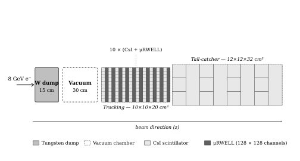
<figcaption class="paper-figure-caption"><b>Fig 1.</b> FIG. 1. Schematic side view of the compact beam dump ex- periment. An 8GeV electron beam is stopped in a 15cm tung- sten dump, followed by a 30cm vacuum chamber. The ECal comprises a 10 × 10 × 20cm3 tracking section of ten inter- leaved 1cm CsI scintillator and 1cm µRWELL layers, with odd-numbered µRWELL planes rotated by 45◦to form a u- v stereo readout, and a 12 × 12 × 32cm3 tail-catcher of four crossed x-y CsI-bar module pairs. The beam propagates along the z direction.</figcaption>
</figure>
<figure class="paper-figure-card">
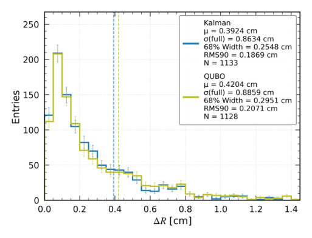
<figcaption class="paper-figure-caption"><b>Fig 2.</b> FIG. 2. Comparison of the position residual distributions for the Kalman and QPU reconstruction methods. The re- constructed track is extrapolated to the z = 0 plane, and the residual is computed as the transverse distance from the truth position. The dashed vertical lines indicate the mean residual values.</figcaption>
</figure>
<figure class="paper-figure-card">
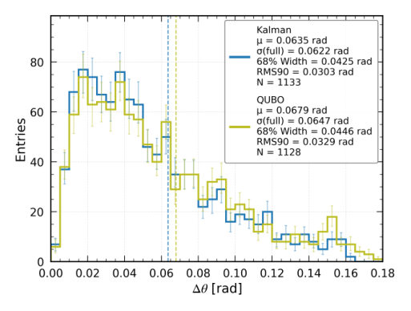
<figcaption class="paper-figure-caption"><b>Fig 3.</b> FIG. 3. Comparison of the angular residual distributions for the Kalman and QPU reconstruction methods. The angular residual is defined as the opening angle between the recon- structed track direction and the truth direction. The dashed vertical lines indicate the mean angular residual values.</figcaption>
</figure>
<figure class="paper-figure-card">
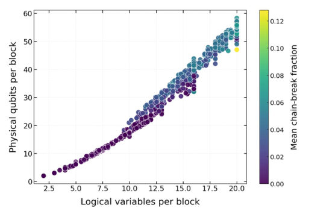
<figcaption class="paper-figure-caption"><b>Fig 4.</b> FIG. 4. QPU embedding resource usage for the single track hit selection QUBO. Both axes are normalized by the number of local QUBO blocks in the submitted problem. The plot shows the physical qubit cost per block as a function of the logical variable count per block.</figcaption>
</figure>
<figure class="paper-figure-card">
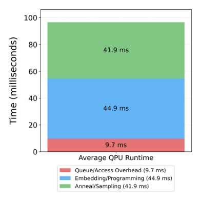
<figcaption class="paper-figure-caption"><b>Fig 5.</b> FIG. 5. Deconstructed average QPU runtime latency for the single track hit selection QUBO. The metrics are normalized by 1128 photon candidate events under a parameter set of S = 1, R = 200, and Ta = 20.0 µs. All values are presented in milliseconds.</figcaption>
</figure>
</div>

<p><strong>Summary.</strong> This paper explores using quantum annealing to solve track reconstruction in gaseous detectors by mapping the pattern recognition challenge into two distinct QUBO formulations. The results show that while classical methods like Kalman filters yield slightly better numerical resolution, the quantum approach is a viable proof-of-concept for local decision-making. This work establishes a framework for hybrid quantum-classical computing in complex detector environments.</p>
<p><strong>Why it may be interesting.</strong> While focused on particle physics instrumentation, the core methodology—mapping a complex combinatorial optimization problem onto a QUBO solvable by quantum annealing—is directly relevant to developing algorithms for solving hard problems in quantum chemistry or materials science simulations.</p>
<details>
<summary>Detailed structure</summary>
<p><strong>Main problem.</strong> The study addresses track reconstruction in gaseous detectors, which is formulated as a complex combinatorial optimization problem due to overlapping hits.</p>
<p><strong>Main result.</strong> Quantum annealing approaches using QUBO formulations successfully reproduce local reconstruction decisions comparable to established Kalman filter methods for low pileup environments.</p>
<p><strong>Method.</strong> The core method involves formulating the hit selection and track association problems into Quadratic Unconstrained Binary Optimization (QUBO) problems, which are then solved on a Quantum Processing Unit (QPU).</p>
<p><strong>Model / system.</strong> The physical system is simulated using DAMSA detector events from a beam dump setup. The optimization uses QUBO formulations to select single hits or associate cluster triplets across multiple detector layers.</p>
<p><strong>Key observables.</strong> Position and angular resolutions ($\sigma_{	ext{full}}$, 68% width), Triplet recovery fraction ($\epsilon_{	ext{triplet}}$), and end-to-end latency ($T_{	ext{total}}$).</p>
<p><strong>Important parameters / regimes.</strong> Penalty strengths (e.g., $A_{	ext{seg}} = 35.0$), Straightness reward strength ($B_{	ext{line}} = 10.0$), and the low pileup regime of the simulated events.</p>
<p><strong>Assumptions / limitations.</strong> The current demonstration is a proof-of-principle limited to low pileup samples; future work must address high occupancy and complex noise scenarios.</p>
<p><strong>Figures summary.</strong> Figures compare position/angular residual distributions (Kalman vs. QPU), show the resource usage of QUBO embedding, and deconstruct the total operational latency for the quantum processing unit.</p>
<p><strong>Paper structure.</strong> The paper introduces the problem, formulates two distinct QUBO subproblems (single hit selection and cluster association), tests these formulations on simulated data, compares results statistically against classical methods, and analyzes computational overheads.</p>
</details>
<details>
<summary>Abstract</summary>
<p>This study investigates the use of quantum annealing for particle track reconstruction in strip-type gaseous detectors. In such detectors, ghost hits and multiple hit combinations can turn pattern recognition into a combinatorial optimization problem. We formulate two reconstruction subproblems as quadratic unconstrained binary optimization problems. The first subproblem selects detector hits associated with a single photon track inside a localized candidate region. The second subproblem selects cluster triplets from different detector layers so that multiple track candidates can be handled within a single quantum processing unit(QPU) submission. The proposed formulations are tested using simulated DAMSA detector events. For the single track hit selection task, the QPU based reconstruction gives position and angular resolutions close to those obtained with a Kalman based reconstruction. In the simultaneous association task, valid cluster triplets are first extracted from the QPU samples and then connected using an association rule based on graph connectivity to construct track candidates. The DAMSA event topology studied here has low pileup and is dominated by the two photon signal from axion-like particle(ALP) decay. In this setting, the results show that the QUBO formulations can reproduce local reconstruction decisions. This provides a practical basis for further studies of reconstruction methods that combine quantum and classical computing in more complex tracking environments.</p>
</details>
<p><sub><a href="#top">↑ back to top</a></sub></p>

<p><a id="paper-2607.12996"></a></p>
<h3 id="expressibility-and-trainability-of-a-two-dimensional-pairwise-quantum-circuit-ansatz"><a href="http://arxiv.org/abs/2607.12996v1">Expressibility and trainability of a two-dimensional pairwise quantum-circuit ansatz</a></h3>
<p><strong>Authors:</strong> Shuai Zhang, Wei Liu, Ji-Chong Yang<br>
<strong>Type:</strong> theory · <strong>Category:</strong> quantum information and computing · <strong>PDF:</strong> <a href="https://arxiv.org/pdf/2607.12996v1">https://arxiv.org/pdf/2607.12996v1</a><br>
<strong>Analysis basis:</strong> full PDF text, analyzed in chunks
<strong>Topic relevance:</strong> <code>QC/QI experiment</code> <strong>2/5</strong> · <code>entanglement &amp; information structure</code> <strong>1/5</strong></p>
<div class="figure-strip-hint">↔ Scroll figures horizontally</div>
<div class="paper-figures-scroll">
<figure class="paper-figure-card">
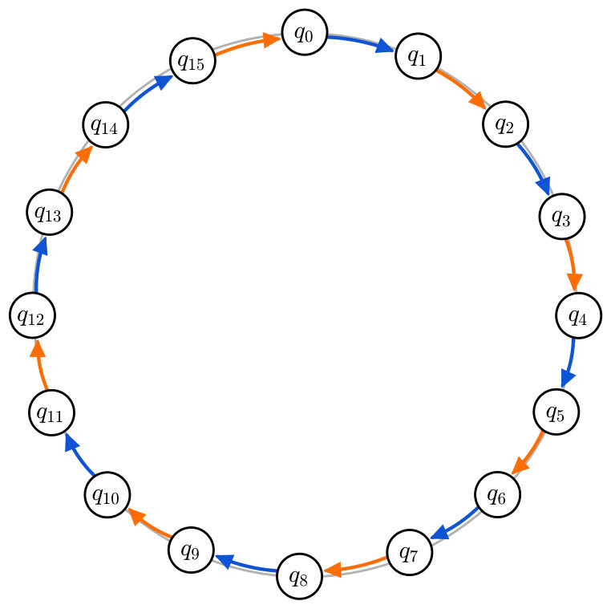
<figcaption class="paper-figure-caption"><b>Fig 1.</b> FIG. 1. Connection diagram for a single layer of 16 qubits in a 1D pairwise ansatz. They are</figcaption>
</figure>
<figure class="paper-figure-card">
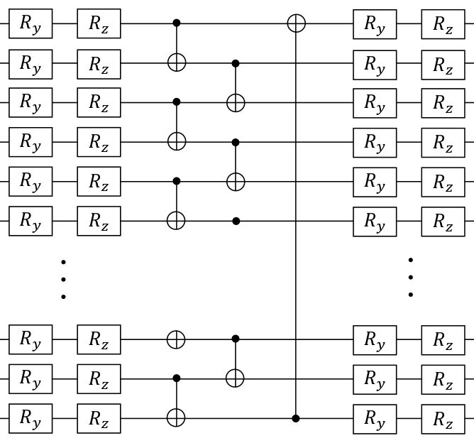
<figcaption class="paper-figure-caption"><b>Fig 2.</b> FIG. 2. The ansatz consists of 16 qubits arranged in 1D pairwise architecture. Each layer is</figcaption>
</figure>
<figure class="paper-figure-card">
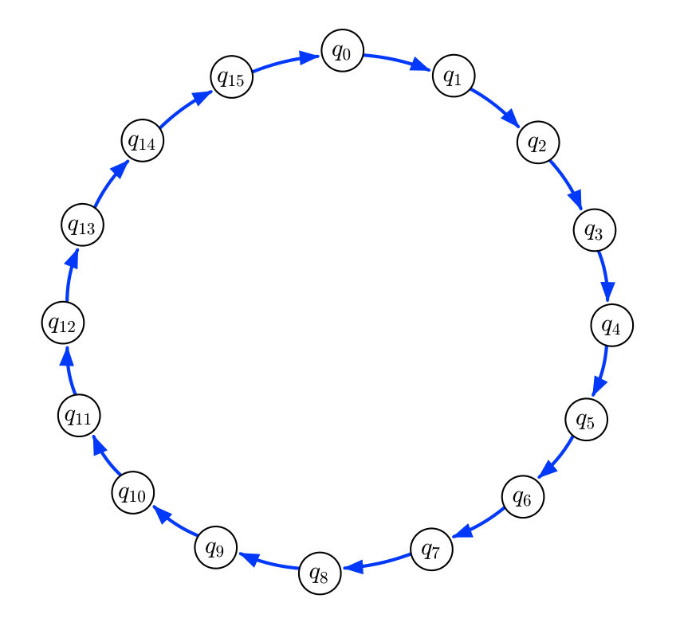
<figcaption class="paper-figure-caption"><b>Fig 3.</b> FIG. 3. Connection diagram for a single layer of 16 qubits in 1D circular ansatz. The same as</figcaption>
</figure>
<figure class="paper-figure-card">
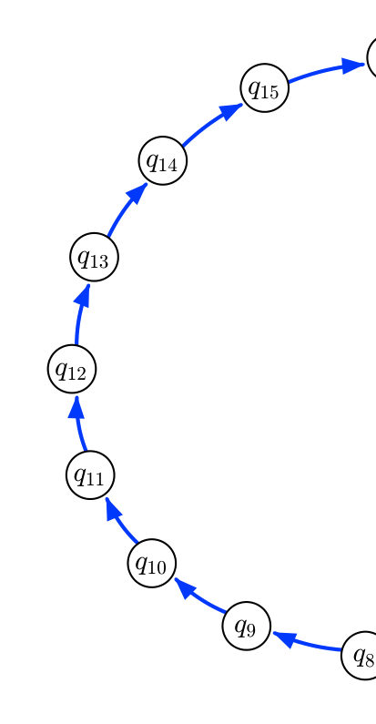
<figcaption class="paper-figure-caption"><b>Fig 4.</b> Fig. 1, the arrows represent CNOT gates.</figcaption>
</figure>
<figure class="paper-figure-card">
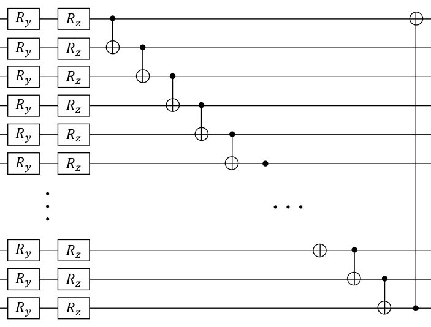
<figcaption class="paper-figure-caption"><b>Fig 5.</b> FIG. 4. The quantum circuit of a 1D circular consisting of 16 qubits. The structure of each layer</figcaption>
</figure>
</div>

<p><strong>Summary.</strong> This paper rigorously compares four different parameterized quantum circuits (ansatze)—including a native 2D pattern—to assess their suitability for variational quantum algorithms. By measuring expressibility via KL divergence and frame potential, and trainability via gradient variance, the authors show that the 2D ansatz offers superior performance at shallow depths by respecting physical hardware connectivity constraints.</p>
<p><strong>Why it may be interesting.</strong> This work directly addresses the crucial engineering challenge of mapping theoretical quantum algorithms onto realistic, geometrically constrained hardware architectures like planar superconducting chips.</p>
<details>
<summary>Detailed structure</summary>
<p><strong>Main problem.</strong> The study compares the expressibility and trainability of a native two-dimensional quantum circuit ansatz against various one-dimensional ansatze for Variational Quantum Algorithms (VQAs). The goal is to determine which connectivity pattern best suits modern, planar quantum hardware.</p>
<p><strong>Main result.</strong> The 2D pairwise ansatz consistently demonstrated superior performance compared to 1D alternatives at shallow layer depths, showing lower KL divergence and smaller gradient variance. However, all ansatze converged to similar performance metrics as the circuit depth increased.</p>
<p><strong>Method.</strong> Expressibility is quantified using Kullback–Leibler (KL) divergence and the second-order frame potential ($F^{(2)}$). Trainability is assessed by measuring the gradient variance of an expectation value with respect to a circuit parameter.</p>
<p><strong>Model / system.</strong> The analysis uses a fixed 16-qubit system modeled on superconducting qubits, specifically comparing nearest-neighbor interactions on a planar $4 	imes 4$ grid (2D) against linear or circular chains (1D).</p>
<p><strong>Key observables.</strong> Kullback–Leibler divergence ($D_{KL}$), second-order frame potential ($\hat{F}^{(2)}$), and gradient variance of the Pauli-Z string expectation value.</p>
<p><strong>Important parameters / regimes.</strong> Number of ansatz layers ($L$), system size ($N=16$ qubits).</p>
<p><strong>Assumptions / limitations.</strong> The comparison is performed by matching the number of repeated ansatz layers ($L$) rather than matching physical resource counts like gate depth or total gates. The gradient variance measures signal strength, not overall optimization success.</p>
<p><strong>Figures summary.</strong> Figures compare KL divergence and frame potential across different ansatze vs. layer depth (L), while other figures plot the gradient variance of a specific Pauli-Z string expectation value against L for all four ansatz types.</p>
<p><strong>Paper structure.</strong> The paper introduces PQCs and the need to match hardware connectivity, defines the 2D and 1D ansatzes, and then systematically compares them using three metrics (KL divergence, frame potential, gradient variance) across increasing circuit depths ($L$).</p>
</details>
<details>
<summary>Abstract</summary>
<p>Parameterized quantum circuits~(PQCs) constitute a central building block of variational quantum algorithms~(VQAs) and quantum machine learning~(QML) methods. Existing ansatz designs often adopt hardware-agnostic or simplified 1D chain/ring entanglement patterns. However, as quantum hardware continues to develop, native 2D connectivity patterns, such as planar superconducting-qubit architectures, are becoming increasingly important. Inspired by this hardware structure, we construct a native 2D pairwise ansatz and compare its expressibility and trainability with representative 1D ansatze at identical layer depths, despite their different circuit depths. For the fixed 16-qubit system, the 2D ansatz has the smallest KL divergence at $L=1$ and $2$, and its second-order frame potential approaches the theoretical lower bound more rapidly at shallow layer counts than the frame potentials of the three 1D ansatze. We also evaluate the gradient variance of the Pauli-$Z$-string expectation value $\langle Z_0\otimes\cdots\otimes Z_{15}\rangle$ with respect to the first $R_y$ angle. For this Pauli-$Z$ string and fixed parameter, the gradient variance is smaller for the 2D circuit at $L=1$--$4$. The differences narrow at $L=5$, and the four ansatze yield statistically compatible variances at $L=6$.</p>
</details>
<p><sub><a href="#top">↑ back to top</a></sub></p>

<p><a id="paper-2607.12128"></a></p>
<h3 id="categorical-tensor-graph-semantics-for-quantum-algorithms"><a href="http://arxiv.org/abs/2607.12128v1">Categorical Tensor-Graph Semantics for Quantum Algorithms</a></h3>
<p><strong>Authors:</strong> Naihong Hu, Ruining Li, Futao Wang<br>
<strong>Type:</strong> theory · <strong>Category:</strong> quantum information and computing · <strong>PDF:</strong> <a href="https://arxiv.org/pdf/2607.12128v1">https://arxiv.org/pdf/2607.12128v1</a><br>
<strong>Analysis basis:</strong> full PDF text, analyzed in chunks
<strong>Topic relevance:</strong> <code>entanglement &amp; information structure</code> <strong>2/5</strong></p>
<div class="figure-strip-hint">↔ Scroll figures horizontally</div>
<div class="paper-figures-scroll">
<figure class="paper-figure-card">
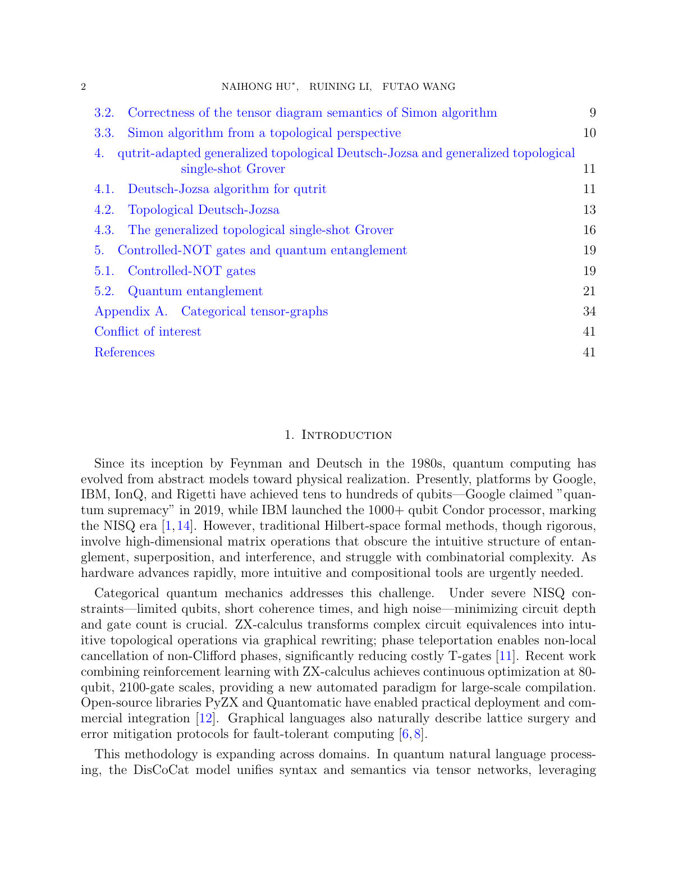
<figcaption class="paper-figure-caption"><b>Fig 1.</b> Low-resolution page preview, page 2</figcaption>
</figure>
<figure class="paper-figure-card">
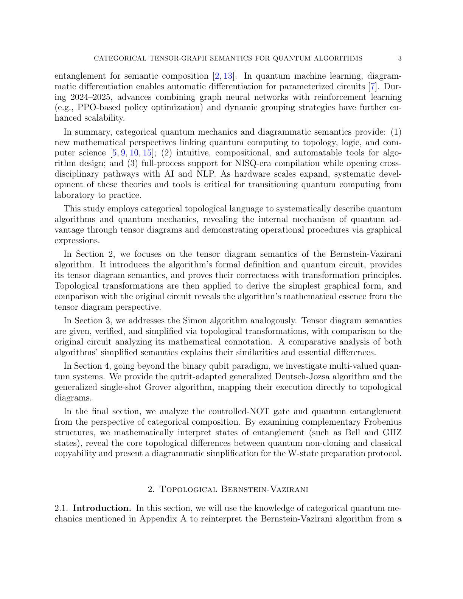
<figcaption class="paper-figure-caption"><b>Fig 2.</b> Low-resolution page preview, page 3</figcaption>
</figure>
<figure class="paper-figure-card">
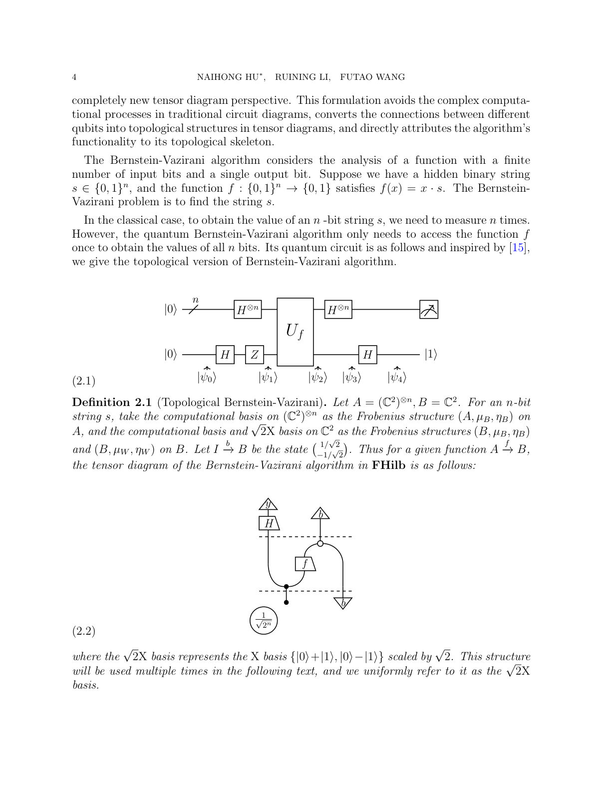
<figcaption class="paper-figure-caption"><b>Fig 3.</b> Low-resolution page preview, page 4</figcaption>
</figure>
<figure class="paper-figure-card">
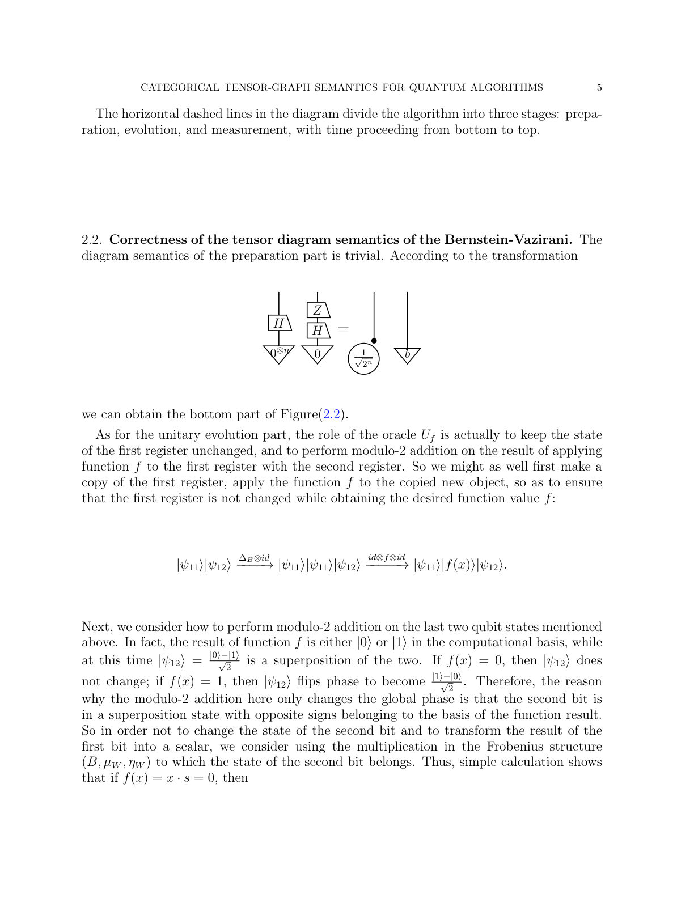
<figcaption class="paper-figure-caption"><b>Fig 4.</b> Low-resolution page preview, page 5</figcaption>
</figure>
<figure class="paper-figure-card">
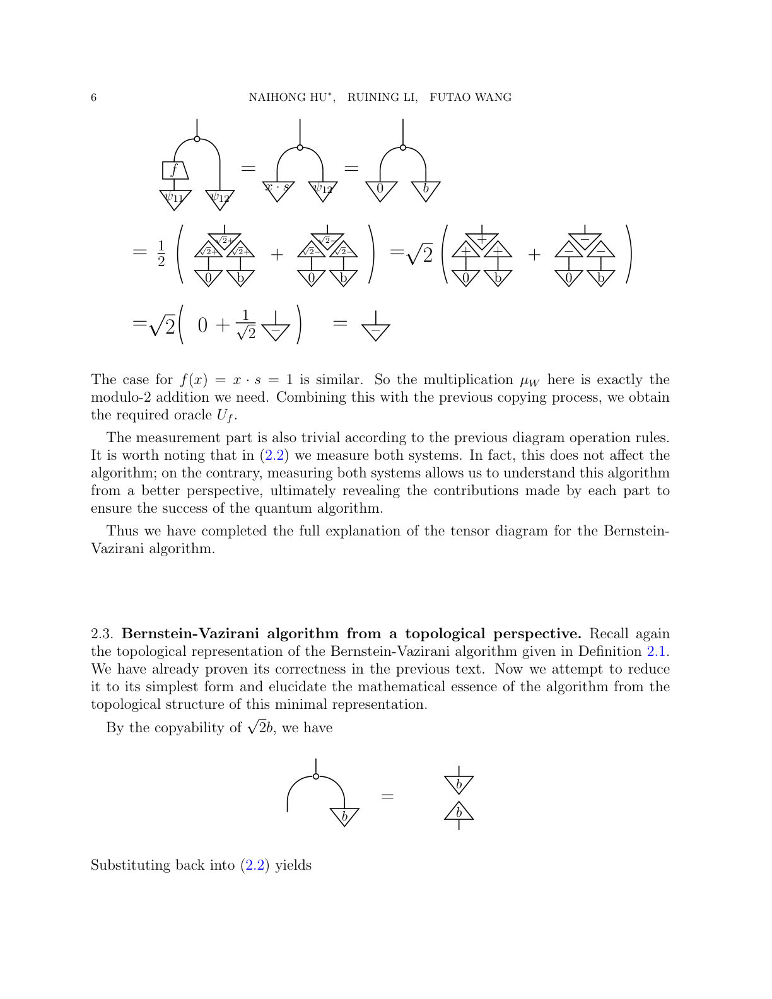
<figcaption class="paper-figure-caption"><b>Fig 5.</b> Low-resolution page preview, page 6</figcaption>
</figure>
</div>

<p><strong>Summary.</strong> This paper develops a novel framework using categorical tensor-graph semantics to analyze quantum algorithms structurally. It reinterprets key protocols like Bernstein-Vazirani and generalizes them to higher dimensions (qutrits) within this topological language. By linking computation to Frobenius structures, it provides a powerful diagrammatic toolkit for circuit optimization and understanding entanglement.</p>
<p><strong>Why it may be interesting.</strong> While highly abstract, the development of a diagrammatic toolkit based on category theory offers a powerful, potentially automated way to optimize quantum circuits by revealing underlying mathematical symmetries beyond standard gate decomposition.</p>
<details>
<summary>Detailed structure</summary>
<p><strong>Main problem.</strong> To provide a structural, intuitive understanding of quantum algorithms by reinterpreting them using categorical tensor-graph semantics within the category FHilb.</p>
<p><strong>Main result.</strong> The paper establishes that fundamental quantum operations like entanglement generation and algorithm execution can be mapped to algebraic structures (Frobenius structures) whose properties reveal deep mathematical connections between computation and topology.</p>
<p><strong>Method.</strong> It employs advanced tools from category theory, specifically utilizing tensor-graph semantics and Frobenius structures, to topologically reinterpret established quantum algorithms and physical processes.</p>
<p><strong>Model / system.</strong> The focus is on abstract quantum computation within finite-dimensional Hilbert spaces (FHilb), analyzing protocols involving qubits and qutrits. The formalism uses monoidal dagger categories to define state preparation and gate operations diagrammatically.</p>
<p><strong>Key observables.</strong> Topological skeletons of algorithms, entanglement properties (non-copyability), and the structure constants derived from complementary Frobenius structures.</p>
<p><strong>Important parameters / regimes.</strong> The dimension of the Hilbert space ($n$), the base field ($\mathbb{C}_2$ for some analyses), and the constant $s$ characterizing complementary bases.</p>
<p><strong>Assumptions / limitations.</strong> The core assumption is that complex quantum operations can be accurately modeled and understood through the lens of categorical algebraic structures like Frobenius algebras.</p>
<p><strong>Figures summary.</strong> Figures illustrate tensor diagrams for algorithms (BV, Simon) and state preparation protocols (Bell, GHZ, W-state), alongside formal definitions for various categorical structures (monoid, comonoid, Frobenius structure).</p>
<p><strong>Paper structure.</strong> The paper builds from defining the necessary algebraic framework (Frobenius structures in FHilb) to applying this framework to reinterpret specific quantum algorithms (BV, Simon, Deutsch-Jozsa generalization), and finally analyzing physical phenomena like entanglement using these structural tools.</p>
</details>
<details>
<summary>Abstract</summary>
<p>This paper systematically investigates quantum computing protocols from the intuitive perspective of categorical tensor-graph semantics within the category FHilb. While conventional Hilbert-space formalisms conceal the structural nature of quantum algorithms behind high-dimensional matrix operations, the topological framework developed herein directly encodes algorithmic functionalities to their graphical skeletons. We provide a comprehensive topological reinterpretation of the Bernstein-Vazirani and the Simon algorithms, demonstrating how topological transformations distill their core mathematical essence and clarify the operational mechanism of oracles. Going beyond standard qubit models, we formalize the qutrit-adapted generalized Deutsch-Jozsa algorithm as well as the generalized single-shot Grover algorithm, explicitly laying out their graphical representations. We further implement CNOT gates via complementary Frobenius structures, trace the diagrammatic genesis of quantum entanglement including Bell and GHZ states, and present a diagrammatic simplification for W-state preparation protocol. By bridging tensor category theory with practical quantum algorithmic design, this work furnishes composable, scalable diagrammatic toolkit essential for automated circuit optimization across the evolving quantum hardware ecosystem.</p>
</details>
<p><sub><a href="#top">↑ back to top</a></sub></p>

<p><a id="paper-2607.12968"></a></p>
<h3 id="maximal-classicalization-of-finite-group-quantum-reference-frame-noise"><a href="http://arxiv.org/abs/2607.12968v1">Maximal Classicalization of Finite-Group Quantum Reference-Frame Noise</a></h3>
<p><strong>Authors:</strong> Maxim V. Churilov<br>
<strong>Type:</strong> theory · <strong>Category:</strong> quantum information and computing · <strong>PDF:</strong> <a href="https://arxiv.org/pdf/2607.12968v1">https://arxiv.org/pdf/2607.12968v1</a><br>
<strong>Analysis basis:</strong> full PDF text, analyzed in chunks
<strong>Topic relevance:</strong> <code>Keldysh / 2PI / non-Gaussian methods</code> <strong>1/5</strong> · <code>correlated / nonlocal dissipation</code> <strong>1/5</strong> · <code>driven-dissipative phase transition</code> <strong>1/5</strong> · <code>entanglement &amp; information structure</code> <strong>1/5</strong> · <code>methods for driven-dissipative</code> <strong>1/5</strong></p>
<div class="figure-strip-hint">↔ Scroll figures horizontally</div>
<div class="paper-figures-scroll">
<figure class="paper-figure-card">
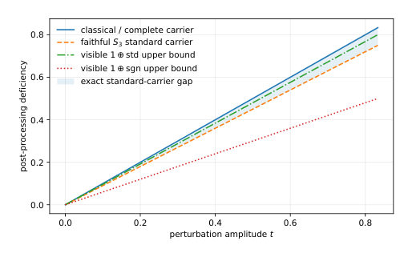
<figcaption class="paper-figure-caption"><b>Fig 1.</b> FIG. 1. Uniform-perturbation deficiencies on S3. The representation-complete carrier attains the classical value; the faithful standard carrier has exact slope 9/10. For the two re- ducible incomplete supports, Eq. (37) gives the shown explicit upper bounds; equality is not asserted for those two curves.</figcaption>
</figure>
</div>

<p><strong>Summary.</strong> This paper characterizes when noisy quantum measurements derived from finite group actions can be perfectly modeled by classical probability convolutions. It proves that this perfect 'classicalization' occurs if and only if the underlying unitary representation of the group is 'representation complete.' The work provides quantitative measures for how far a system deviates from ideal classical behavior.</p>
<p><strong>Why it may be interesting.</strong> It provides rigorous mathematical tools to quantify the limits of quantum information processing when noise is structured by group symmetries, which has implications for quantum metrology and quantum communication protocols.</p>
<details>
<summary>Detailed structure</summary>
<p><strong>Main problem.</strong> The central problem is determining the precise conditions under which optimal quantum post-processing (channel discrimination) for a noisy finite quantum reference frame reduces exactly to classical convolution over group elements.</p>
<p><strong>Main result.</strong> Representation completeness of the unitary representation $U$ of the group $G$ is proven to be the exact necessary and sufficient condition for this universal reduction from quantum optimization to classical convolution.</p>
<p><strong>Method.</strong> The authors use algebraic techniques involving irreducible representations, isotypic decomposition, and comparing quantum channel distances (diamond norm) against classical probability metrics ($\ell_1$ norm).</p>
<p><strong>Model / system.</strong> The model involves a noisy finite quantum reference frame characterized by a random-unitary channel $\Phi^U$, derived from the action of a unitary representation $U$ of a finite group $G$. The analysis extends to infinite compact groups using Peter-Weyl theory.</p>
<p><strong>Key observables.</strong> Directional post-processing error ($\delta_U$), visible Plancherel dimension ($S(U)$), and the deficiency gap quantifying the failure of classicalization.</p>
<p><strong>Important parameters / regimes.</strong> The structure of the group $G$, the specific unitary representation $U$, and the dimensions related to irreducible representations ($d_\lambda$).</p>
<p><strong>Assumptions / limitations.</strong> For finite groups, the analysis relies on the equivalence between various mathematical conditions (e.g., orthonormal orbits, representation completeness). For infinite groups, stability is restricted to a 'visible Peter-Weyl band' $\Lambda_0$.</p>
<p><strong>Figures summary.</strong> No specific figure summaries were extracted; the notes detail theoretical theorems and derived formulas for dimensions and distances.</p>
<p><strong>Paper structure.</strong> The paper establishes equivalences between representation completeness and classicalization (Theorem III.1), quantifies resource costs like minimum ancilla dimensions, derives explicit deficiency gaps for incomplete carriers, and finally extends these concepts to infinite compact groups using spectral theory.</p>
</details>
<details>
<summary>Abstract</summary>
<p>A finite quantum reference token with group-valued misalignment induces a random-unitary channel, but optimal degradation is generally an optimization over all quantum post-processings. For a unitary representation U of a finite group G, we prove that the following conditions are equivalent: U contains every irreducible type; one ancilla-assisted input has an orthonormal G-orbit; signed group measures embed isometrically into channels in diamond norm; and, for every pair of noise laws p,q, $\inf_{Λ\in\mathrm{CPTP}} \frac{1}{2}\|Φ_q^U-Λ\circΦ_p^U\|_\diamond =\min_{r\in\mathcal{P}(G)}\frac{1}{2}\|q-r*p\|_1$. Thus representation completeness is the exact carrier condition for universal reduction of quantum post-processing to classical convolution. We determine the minimum ancilla dimensions for an orthogonal orbit and for an invariant calibration seed. For an incomplete carrier, with visible Plancherel dimension S(U), we derive the exact conditional-expectation distance $\frac{1}{2}\|\operatorname{id}-Φ_u^U\|_\diamond=1-1/S(U)$ and an explicit quantum--classical deficiency gap. For irreducible carriers the deficiency is obtained in closed form; the faithful two-dimensional representation of $S_3$ yields an exact ten-percent reduction relative to classical convolution. We also characterize law identifiability through the conjugation representation, provide finite linear programs and decision witnesses, and establish both a finite-dimensional obstruction and stable visible-band reconstruction for infinite compact groups. Deterministic ancillary code reproduces the finite-group examples and numerical regression checks.</p>
</details>
<p><sub><a href="#top">↑ back to top</a></sub></p>

<p><a id="paper-2607.12559"></a></p>
<h3 id="the-infinitesimal-structure-of-quantum-information"><a href="http://arxiv.org/abs/2607.12559v1">The Infinitesimal Structure of Quantum Information</a></h3>
<p><strong>Authors:</strong> Luca Barbieri-Viale<br>
<strong>Type:</strong> theory · <strong>Category:</strong> other · <strong>PDF:</strong> <a href="https://arxiv.org/pdf/2607.12559v1">https://arxiv.org/pdf/2607.12559v1</a><br>
<strong>Analysis basis:</strong> full PDF text, analyzed in chunks
<strong>Topic relevance:</strong> <code>driven-dissipative phase transition</code> <strong>1/5</strong> · <code>entanglement &amp; information structure</code> <strong>1/5</strong> · <code>methods for driven-dissipative</code> <strong>1/5</strong> · <code>non-equilibrium dynamics</code> <strong>1/5</strong></p>
<div class="figure-strip-hint">↔ Scroll figures horizontally</div>
<div class="paper-figures-scroll">
<figure class="paper-figure-card">
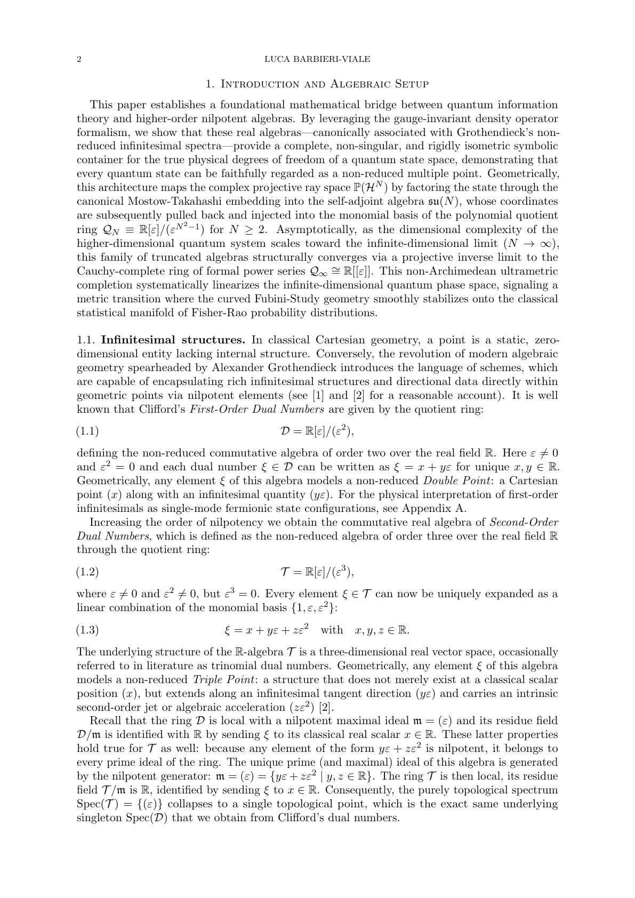
<figcaption class="paper-figure-caption"><b>Fig 1.</b> Low-resolution page preview, page 2</figcaption>
</figure>
<figure class="paper-figure-card">
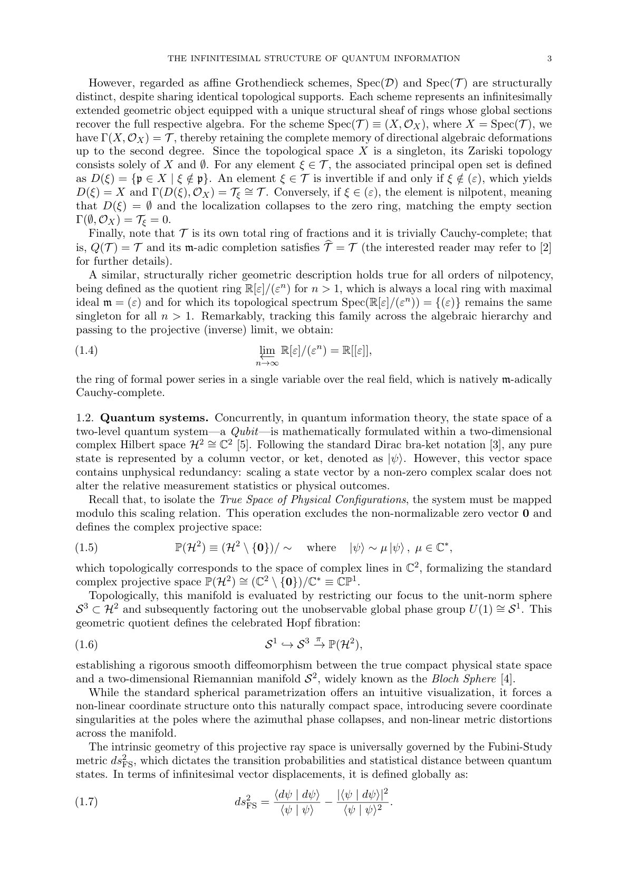
<figcaption class="paper-figure-caption"><b>Fig 2.</b> Low-resolution page preview, page 3</figcaption>
</figure>
<figure class="paper-figure-card">
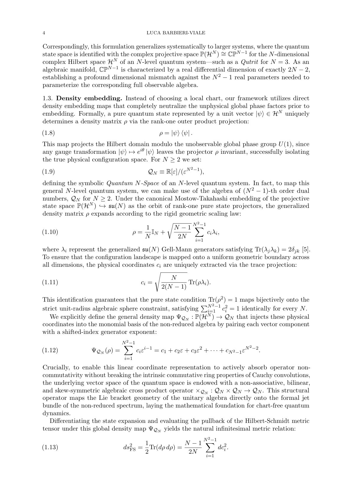
<figcaption class="paper-figure-caption"><b>Fig 3.</b> Low-resolution page preview, page 4</figcaption>
</figure>
<figure class="paper-figure-card">
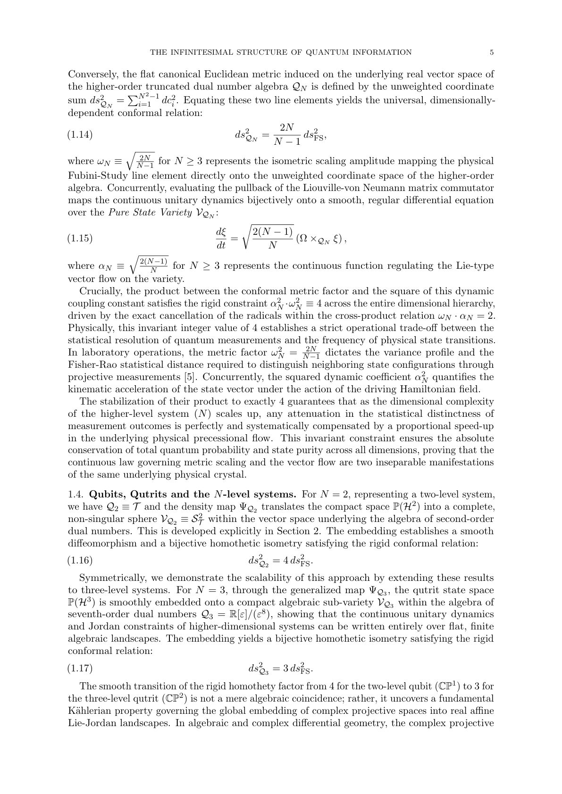
<figcaption class="paper-figure-caption"><b>Fig 4.</b> Low-resolution page preview, page 5</figcaption>
</figure>
<figure class="paper-figure-card">
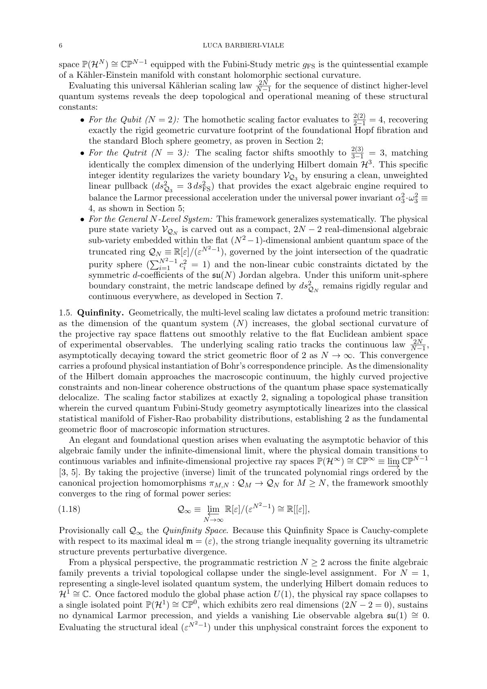
<figcaption class="paper-figure-caption"><b>Fig 5.</b> Low-resolution page preview, page 6</figcaption>
</figure>
</div>

<p><strong>Summary.</strong> This work develops an advanced geometric framework using higher-order dual number algebras to represent the state space of quantum systems. It shows that complex, non-linear quantum dynamics can be mapped onto simple, flat, linear flows in this specialized algebraic setting. This offers a powerful, unified mathematical language for studying quantum kinematics.</p>
<p><strong>Why it may be interesting.</strong> It provides a highly abstract yet powerful mathematical machinery that unifies quantum geometry and dynamics by translating non-linear evolution into linear algebraic flows within nilpotent structures.</p>
<details>
<summary>Detailed structure</summary>
<p><strong>Main problem.</strong> The paper aims to establish a rigorous, unified geometric framework for quantum state spaces by embedding them into higher-order dual number algebras.</p>
<p><strong>Main result.</strong> It demonstrates that the non-linear Liouville-von Neumann dynamics map globally onto flat, linear, and rigid algebraic flows within these nilpotent dual algebras.</p>
<p><strong>Method.</strong> The core method involves constructing gauge-invariant density map embeddings ($\Psi_{Q_N}$) from the physical projective Hilbert space $ ext{P}(H_N)$ into truncated polynomial rings $Q_N$.</p>
<p><strong>Model / system.</strong> The system analyzed is the quantum state space of an N-level system (e.g., qubits, qutrits), whose dynamics are governed by the Liouville-von Neumann equation.</p>
<p><strong>Key observables.</strong> Fubini-Study metric ($ds^2_{FS}$), density matrix $
ho$, and related geometric scaling factors ($\omega_N$).</p>
<p><strong>Important parameters / regimes.</strong> The dimension $N$ of the system, which dictates the order of nilpotency in the dual algebra ($\varepsilon^{N^2-1}=0$).</p>
<p><strong>Assumptions / limitations.</strong> It assumes that using non-reduced schemes and nilpotent dual number algebras provides a complete, non-singular container for all physical degrees of freedom.</p>
<p><strong>Figures summary.</strong> Not specified by notes; the analysis focuses on deriving metric relations ($ds^2_{QN} = 	ext{factor} \cdot ds^2_{FS}$) and algebraic isomorphisms.</p>
<p><strong>Paper structure.</strong> The paper builds from abstract algebraic structures (Grothendieck schemes, dual algebras) to physical systems ($   ext{P}(H_N)$), using the density embedding map as the unifying tool across different dimensions $N$.</p>
</details>
<details>
<summary>Abstract</summary>
<p>This paper establishes a rigorous, unified geometric framework for quantum state spaces by constructing smooth, regular embeddings into higher-order dual number algebras $\mathcal{Q}_N \equiv \mathbb{R}[\varepsilon]/(\varepsilon^{N^2-1})$, wherein every quantum state is faithfully represented as a non-reduced scheme-theoretic point. We show that under this unified family of truncated rings, the non-linear matrix commutators governing the Liouville-von Neumann dynamics map globally onto flat, linear, and rigid algebraic flows, establishing nilpotent dual algebras as a pristine geometric landscape for higher-dimensional quantum kinematics.</p>
</details>
<p><sub><a href="#top">↑ back to top</a></sub></p>

<p><a id="paper-2607.12781"></a></p>
<h3 id="the-self-organized-vacancy-order-in-prmath760mathgemath761math"><a href="http://arxiv.org/abs/2607.12781v1">The self-organized vacancy order in Pr$_9$Ge$_{16}$</a></h3>
<p><strong>Authors:</strong> Jayashani S. T. Wickramasinghe, Melissa G. Anderson, Kelci Graville, Gregory T. McCandless, Zachary J. Morgan, Brianna R. Billingsley, Tai Kong, Hyunsoo Kim, Aleksandr V. Chernatyskiy, Simon G. Mitchell, Liang Wu, Julia Y. Chan, Feng Ye, Halyna Hodovanets<br>
<strong>Type:</strong> experiment · <strong>Category:</strong> strongly correlated electrons · <strong>PDF:</strong> <a href="https://arxiv.org/pdf/2607.12781v1">https://arxiv.org/pdf/2607.12781v1</a><br>
<strong>Analysis basis:</strong> full PDF text, analyzed in chunks
<strong>Topic relevance:</strong> <code>Kondo &amp; dissipative impurity</code> <strong>1/5</strong> · <code>analog quantum simulation</code> <strong>1/5</strong> · <code>exotic spin models in light-matter</code> <strong>1/5</strong> · <code>non-equilibrium dynamics</code> <strong>1/5</strong></p>
<div class="figure-strip-hint">↔ Scroll figures horizontally</div>
<div class="paper-figures-scroll">
<figure class="paper-figure-card">
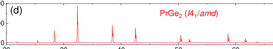
<figcaption class="paper-figure-caption"><b>Fig 1.</b> FIG. 1. (a)-(c) X-ray diffraction patterns of Pr9Ge16 ground single crystals. The inset shows single crystals of Pr9Ge16. Squares in the background grid are 1 mm2 each. (d) Simulated powder X-ray diffraction pattern for I41/amd using crystallographic data from Ref. [22], a = 4.251 and c = 7.6131 ˚A. The powder X-ray diffraction patterns in panels (a)-(c) clearly show consistent reflections that cannot be indexed by space group I41/amd.</figcaption>
</figure>
<figure class="paper-figure-card">
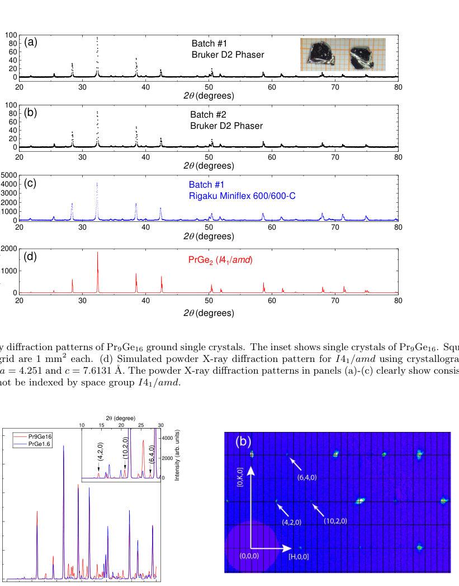
<figcaption class="paper-figure-caption"><b>Fig 2.</b> FIG. 2. (a) Simulated neutron diffraction pattern for Pr9Ge16 and PrGe1.6[23]. While the stronger intensity peaks coincide, the weaker peaks in Pr9Ge16, such as the (4,2,0), (10,2,0), and (6,4,0) reflections (indexed in our enlarged cell), are absent in the PrGe1.6 structure. (b) The single crystal X-ray diffraction pattern of Pr9Ge16 in the (h,k,0) scattering plane. The weak reflections of (4,2,0), (10,2,0), and (6,4,0) are clearly visible, indicating the expanded unit cell.</figcaption>
</figure>
<figure class="paper-figure-card">
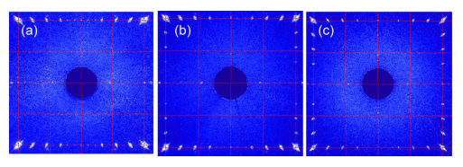
<figcaption class="paper-figure-caption"><b>Fig 3.</b> FIG. 4. Single crystal X-ray diffraction patterns in selected samples in the (h,k,0) scattering plane showing different do- main populations of (a) 100:0 (b) 70:30 and (c) 50:50 using the same orthorhombic setting as in Fig. 3.</figcaption>
</figure>
<figure class="paper-figure-card">
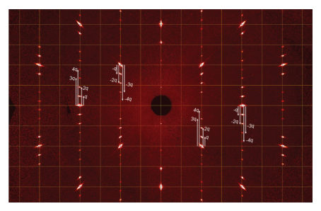
<figcaption class="paper-figure-caption"><b>Fig 4.</b> FIG. 3. Single crystal X-ray diffraction in the (h,k,0) scatter- ing plane showing satellite reflections up to the fourth order. The cell was indexed using the orthorhombic setting [24] with a = 6.0268, b = 6.0347, and c = 13.98 ˚A.</figcaption>
</figure>
<figure class="paper-figure-card">
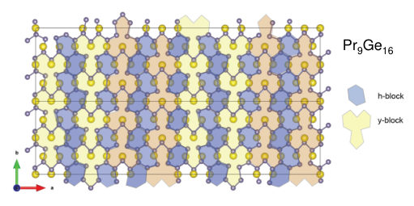
<figcaption class="paper-figure-caption"><b>Fig 5.</b> FIG. 5. h-block and y-block schematics for Fdd2 space group for Pr9Ge16, with Pr and Ge ratio of 1.777.</figcaption>
</figure>
</div>

<p><strong>Summary.</strong> This work reports the discovery of a new crystalline phase, $  ext{Pr}<em 16>9   ext{Ge}</em>$, which exhibits ordered vacancies within its structure. Electrically, it behaves as a metal with electron-like carriers, and magnetically, it displays an anisotropic magnetic order that can be suppressed by a small external field.</p>
<p><strong>Why it may be interesting.</strong> While primarily experimental, the investigation into the interplay between crystal lattice distortion (vacancy ordering) and emergent magnetic/electronic states is central to strongly correlated electron physics. The comparison to topological semimetals suggests potential avenues for studying exotic quantum phases in these materials.</p>
<details>
<summary>Detailed structure</summary>
<p><strong>Main problem.</strong> The study reports the discovery of a new crystal structure ($ ext{Pr}<em 16>9   ext{Ge}</em>$) and characterizes its complex physical properties, including magnetic and electronic behavior.</p>
<p><strong>Main result.</strong> Single crystals were grown adopting an orthorhombic $Fdd2$ structure with ordered Ge vacancies. The material exhibits metallic conduction, electron-like carriers ($n \sim 10^{27} 	ext{ m}^{-3}$), and a magnetic transition at $T_C = 14.3 	ext{ K}$.</p>
<p><strong>Method.</strong> The research employed single crystal growth (high-temperature flux), structural characterization via XRD/Neutron Diffraction, and transport measurements (resistivity, Hall effect) alongside magnetization studies.</p>
<p><strong>Model / system.</strong> The physical system is the rare earth germanide $   ext{Pr}<em 16>9   ext{Ge}</em>$ ion's $J=4$ ground state splits into nine singlet states due to low site symmetry.}$. The electronic structure analysis suggests that the non-Kramers $    ext{Pr}^{3+</p>
<p><strong>Key observables.</strong> Anisotropic magnetization (easy axis along $b$), resistivity anomaly at $14.3 	ext{ K}$, Hall carrier concentration ($10^{27} 	ext{ m}^{-3}$), and satellite reflections indicating vacancy ordering.</p>
<p><strong>Important parameters / regimes.</strong> Magnetic field required to suppress order ($\approx 0.4 	ext{ T}$); Carrier concentration ($n \sim 10^{27} 	ext{ m}^{-3}$); Transition temperature ($T_C = 14.3 	ext{ K}$).</p>
<p><strong>Assumptions / limitations.</strong> The authors assume the structure is best described by the $Fdd2$ space group, despite discrepancies with published patterns; analysis of electronic properties relies on fitting Hall data to a one-band model.</p>
<p><strong>Figures summary.</strong> Figures show powder XRD patterns comparing observed data to proposed structures ($I4_1/amd$ vs. $Fdd2$), and phase diagrams mapping magnetic order versus temperature and field.</p>
<p><strong>Paper structure.</strong> The paper follows a progression from structural discovery (new $Fdd2$ structure with vacancy ordering) to electronic characterization (metallic behavior, electron carriers), culminating in the detailed analysis of anisotropic magnetic properties and phase transitions.</p>
</details>
<details>
<summary>Abstract</summary>
<p>In this work, we report the discovery of a new crystal structure on the Ge-rich side of the Pr-Ge binary phase diagram. Using a high-temperature flux technique, we grew single crystals of $Pr_9Ge_{16}$, which adopt a previously unreported orthorhombic $Fdd$2 structure type featuring ordered Ge vacancies. We present the anisotropic magnetic properties and identify the crystallographic $b$ axis perpendicular to the crystal plane as the magnetic easy axis. Temperature-dependent resistivity measurements reveal metallic behavior with a distinct anomaly at $T_{\mathrm{C}}$ = 14.3 K. Hall resistivity data indicate that electron-like carriers dominate, with a carrier concentration on the order of $10^{27}~\mathrm{m}^{-3}$. The magnetic order is readily suppressed by a magnetic field of approximately 0.4 T applied along the easy $b$ axis.</p>
</details>
<p><sub><a href="#top">↑ back to top</a></sub></p>

<p><a id="paper-2607.12802"></a></p>
<h3 id="a-variational-surrogate-approach-to-finite-horizon-quantum-control-via-hardware-efficient-ansatz"><a href="http://arxiv.org/abs/2607.12802v1">A Variational Surrogate Approach to Finite-Horizon Quantum Control via Hardware-Efficient Ansatz</a></h3>
<p><strong>Authors:</strong> Nahid Binandeh Dehaghani, Rafal Wisniewski, A. Pedro Aguiar<br>
<strong>Type:</strong> both · <strong>Category:</strong> quantum information and computing · <strong>PDF:</strong> <a href="https://arxiv.org/pdf/2607.12802v1">https://arxiv.org/pdf/2607.12802v1</a><br>
<strong>Analysis basis:</strong> full PDF text, analyzed in chunks
<strong>Topic relevance:</strong> <code>QC/QI experiment</code> <strong>1/5</strong> · <code>methods for driven-dissipative</code> <strong>1/5</strong> · <code>non-equilibrium dynamics</code> <strong>1/5</strong></p>
<div class="figure-strip-hint">↔ Scroll figures horizontally</div>
<div class="paper-figures-scroll">
<figure class="paper-figure-card">
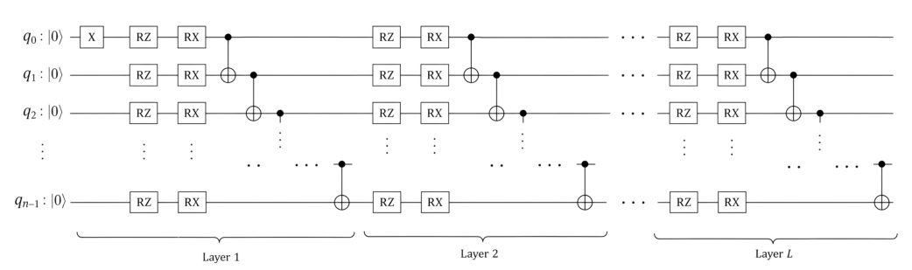
<figcaption class="paper-figure-caption"><b>Fig 1.</b> Fig. 1: Hardware-efficient variational ansatz employed in the proposed framework for an N-qubit system. The initial state |10 · · · 0⟩is prepared by applying an X gate to qubit q0. Each variational layer consists of parameterized Rz and Rx rotations on every qubit, followed by a nearest-neighbor CNOT entangling block. Repeating this structure for L layers defines the parameterized unitary U(θ) used to represent the terminal evolution.</figcaption>
</figure>
<figure class="paper-figure-card">
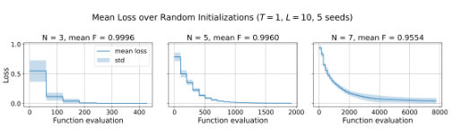
<figcaption class="paper-figure-caption"><b>Fig 2.</b> Fig. 2: Mean loss during optimization for different system sizes N ∈{3, 5, 7} with normalized horizon T = 1 and circuit depth L = 10. The solid line represents the mean loss over five independent random initializations, and the shaded region indicates one standard deviation.</figcaption>
</figure>
<figure class="paper-figure-card">
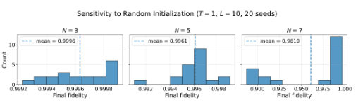
<figcaption class="paper-figure-caption"><b>Fig 3.</b> Fig. 4: Distribution of the final fidelities obtained from 20 indepen- dent random initializations for system sizes N = 3, N = 5, and N = 7 with fixed circuit depth L = 10 and normalized horizon T = 1. The dashed vertical line indicates the mean fidelity for each system size.</figcaption>
</figure>
<figure class="paper-figure-card">
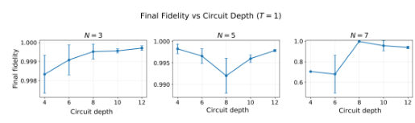
<figcaption class="paper-figure-caption"><b>Fig 4.</b> Fig. 3: Final fidelity as a function of the circuit depth L for system sizes N = 3, N = 5, and N = 7 with normalized horizon T = 1. The markers represent the mean final fidelity over five independent random initializations, while the error bars indicate one standard deviation.</figcaption>
</figure>
<figure class="paper-figure-card">
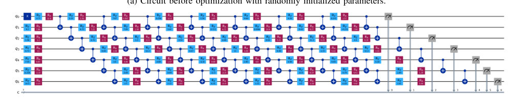
<figcaption class="paper-figure-caption"><b>Fig 5.</b> Fig. 5: Representative seven-qubit hardware-efficient variational circuits with circuit depth L = 8. The initial state |10 · · · 0⟩is prepared by applying an X gate to qubit q0. The circuit topology remains unchanged before and after optimization; only the trainable rotation angles are updated by the hybrid quantum-classical optimization procedure.</figcaption>
</figure>
</div>

<p><strong>Summary.</strong> The authors propose a novel variational framework to solve finite-horizon quantum state transfer problems. They replace the difficult task of optimizing time-dependent controls with minimizing an infidelity cost function over parameters defining a trainable, hardware-efficient quantum circuit. This method offers a flexible and implementable alternative for controlling quantum systems on current quantum devices.</p>
<p><strong>Why it may be interesting.</strong> This work provides a practical, device-compatible method for quantum control that bypasses complex Hamiltonian synthesis by framing the problem as a variational circuit optimization, which is highly relevant for near-term quantum hardware implementation.</p>
<details>
<summary>Detailed structure</summary>
<p><strong>Main problem.</strong> The paper addresses quantum control for steering an N-qubit system from an initial state to a target state over a fixed time horizon.</p>
<p><strong>Main result.</strong> They demonstrate that replacing explicit time-dependent controls with optimization over hardware-efficient parameterized circuits achieves high-fidelity state transfer, though fidelity degrades with increasing system size or circuit depth due to optimization challenges.</p>
<p><strong>Method.</strong> A variational quantum approach is used where the control objective is minimized by optimizing parameters ($ heta$) within a trainable, hardware-efficient ansatz unitary $U(	heta)$, avoiding direct time evolution simulation.</p>
<p><strong>Model / system.</strong> The system is an N-qubit closed quantum system whose evolution is governed by controlled dynamics. The method uses a parameterized circuit composed of alternating single-qubit rotations and nearest-neighbor entangling gates.</p>
<p><strong>Key observables.</strong> Terminal fidelity ($F(	heta)$) between the evolved state and the target state, and the corresponding loss function $J(	heta)$.</p>
<p><strong>Important parameters / regimes.</strong> System size ($N \in \{3, 5, 7\}$), circuit depth ($L$), and optimization parameters ($  heta$).</p>
<p><strong>Assumptions / limitations.</strong> The approach assumes that the terminal evolution can be accurately approximated by a fixed-depth, hardware-efficient ansatz; it also operates in an open-loop control setting.</p>
<p><strong>Figures summary.</strong> Figures show how final fidelity changes with circuit depth ($L$) for various system sizes ($N$), and illustrate the increased sensitivity (broader distribution of fidelities) to initialization as $N$ increases.</p>
<p><strong>Paper structure.</strong> The paper introduces the variational framework, details the hardware-efficient ansatz structure, presents numerical results showing performance vs. depth/size, and discusses the trade-offs between expressivity and optimization complexity.</p>
</details>
<details>
<summary>Abstract</summary>
<p>We present a variational quantum framework for finite-horizon quantum control based on hardware-efficient ansätze. The objective is to steer a quantum system from a given initial state to a desired target state over a fixed time horizon by minimizing a terminal cost defined in terms of state fidelity. Instead of explicitly synthesizing time-dependent control fields or enforcing Hamiltonian reachability constraints, the proposed method reformulates the control objective as a variational optimization problem in which a hardware-efficient parameterized quantum circuit provides a surrogate parameterization of the terminal evolution. The circuit consists of alternating layers of single-qubit rotations and entangling gates, whose parameters are optimized using classical routines to minimize the terminal infidelity. This formulation avoids reliance on problem-specific or physics-inspired ansätze, providing a flexible and implementation-friendly approach compatible with near-term quantum devices. Numerical experiments on multi-qubit state-transfer benchmarks demonstrate high-fidelity state transfer while highlighting the trade-off between ansatz expressivity, optimization complexity, and scalability with respect to system size and circuit depth.</p>
</details>
<p><sub><a href="#top">↑ back to top</a></sub></p>

<p><a id="paper-2607.12737"></a></p>
<h3 id="magnetic-field-driven-phase-switching-in-the-antiferromagnetic-mott-insulator-camath789mathrumath790mathtimath791mathmath792mathomath793math"><a href="http://arxiv.org/abs/2607.12737v1">Magnetic field-driven phase switching in the antiferromagnetic Mott insulator Ca$_3$(Ru$_{0.99}$Ti$_{0.01}$)$_2$O$_7$</a></h3>
<p><strong>Authors:</strong> Ksenia S. Rabinovich, Tim Priessnitz, Nils Gross, George Jackeli, Maximilian J. Krautloher, Pascal Reiss, Eberhard J. Goering, Jurgen H. Smet, Bernhard Keimer, Alexander V. Boris<br>
<strong>Type:</strong> experiment · <strong>Category:</strong> strongly correlated electrons · <strong>PDF:</strong> <a href="https://arxiv.org/pdf/2607.12737v1">https://arxiv.org/pdf/2607.12737v1</a><br>
<strong>Analysis basis:</strong> full PDF text, analyzed in chunks
<strong>Topic relevance:</strong> <code>analog quantum simulation</code> <strong>1/5</strong> · <code>exotic spin models in light-matter</code> <strong>1/5</strong> · <code>spintronics-quantum-optics interface</code> <strong>1/5</strong></p>
<div class="figure-strip-hint">↔ Scroll figures horizontally</div>
<div class="paper-figures-scroll">
<figure class="paper-figure-card">
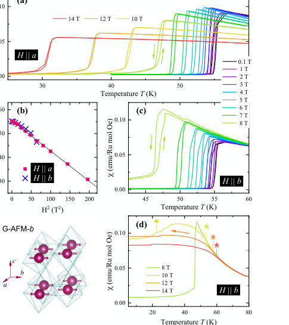
<figcaption class="paper-figure-caption"><b>Fig 1.</b> FIG. 1. Temperature dependence of magnetic susceptibility χ(T) of Ca3(Ru0.99Ti0.01)2O7 measured at different magnetic fields: (a) χ(T) measured at magnetic fields up to 14 T ap- plied along the a-axis. (b) The G-AFM to PM phase transi- tion temperature from field cooled (FC) χ(T) measurements plotted against magnetic field squared, with H||a-axis (red squares) and H||b-axis (blue crosses). (c,d) χ(T) measured with H||b-axis at field below (c) and above (d) 8T. In (d), the diamond and stars correspond to the positions of the broad maximum and minima in the derivatives of FC χ(T), respec- tively. The image of Ru moments (red) surrounded by oxygen octahedra illustrates the magnetically ordered...</figcaption>
</figure>
<figure class="paper-figure-card">
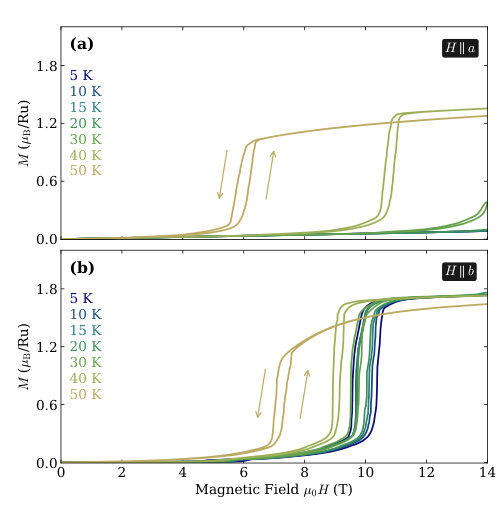
<figcaption class="paper-figure-caption"><b>Fig 2.</b> FIG. 2. (a,b) Magnetization of Ca3(Ru0.99Ti0.01)2O7 as a function of the magnetic field, measured at temperatures below TN. Magnetic fields up to 14 T are applied along the a-axis (a) and b-axis (b). In (b), the magnetic moment at 14 T for temperatures below 40 K reaches about 1.73 µB/Ru, indicating a trend towards saturation.</figcaption>
</figure>
<figure class="paper-figure-card">
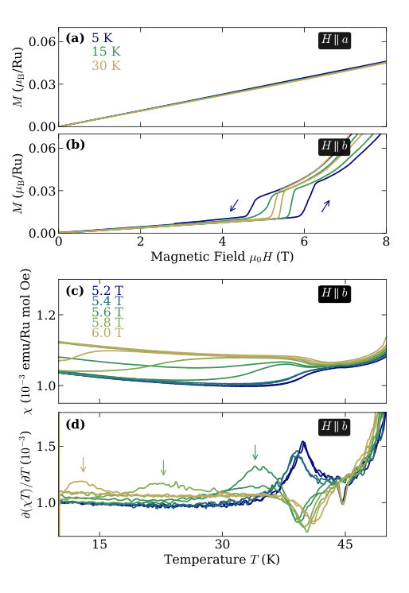
<figcaption class="paper-figure-caption"><b>Fig 3.</b> FIG. 3. (a,b) Field-dependent magnetization of Ca3(Ru0.99Ti0.01)2O7 measured at low temperatures with fields applied along the a-axis (a) and b-axis (b). In (b), M(H) measured along the easy b-axis exhibits a sharp, step- like hysteretic change at the spin-flop transition field, Hf b, indicating the reorientation of the Ru moments from AFM order into a canted spin-flop state, perpendicular to the field. (c) Magnetic susceptibility χ(T) measured at magnetic fields near Hf b applied along the b-axis. The zero-field-cooled (ZFC) and field-cooled (FC) χ(T) curves diverge below the critical temperatures corresponding to the applied fields, as deter- mined by the peaks in the derivatives of ZFC...</figcaption>
</figure>
<figure class="paper-figure-card">
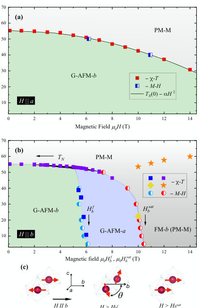
<figcaption class="paper-figure-caption"><b>Fig 4.</b> FIG. 4. (a,b) Magnetic temperature–field (T-H) phase diagrams of Ca3(Ru0.99Ti0.01)2O7 with the magnetic field applied along the a-axis (a) and b-axis (b). The phase diagrams are derived from critical temperatures observed in temperature-dependent magnetic susceptibility (χ-T) as shown in Fig. 1 and Fig. 3(c) and 3(d) (filled symbols), and critical fields from the field-dependent magnetization (M-H) as shown in Fig. 2 and Fig. 3(a) and 3(b) (half-filled sym- bols). In (a), the critical TN temperature for AFM ordering decreases quadratically with increasing field along the a-axis. The critical field values correspond to temperature-driven transitions from the G-AFM-b to the paramagnetic PM-M...</figcaption>
</figure>
<figure class="paper-figure-card">
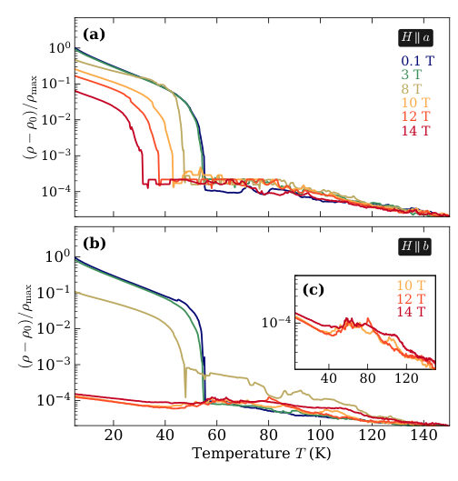
<figcaption class="paper-figure-caption"><b>Fig 5.</b> FIG. 5. Temperature dependence of the normalized in- plane, low-frequency (38 Hz) resistivity, (ρ −ρ0)/ρmax, of Ca3(Ru0.99Ti0.01)2O7 measured for different magnetic fields. Fields up to 14 T are applied along the a-axis (a) and b-axis (b). (c) Magnified view for fields ≥10 T along the b-axis.</figcaption>
</figure>
</div>

<p><strong>Summary.</strong> The study investigates the field-induced phase diagram of $    ext{Ca}<em 0.99>3(  ext{Ru}</em>_7$, an antiferromagnetic Mott insulator. By measuring magnetization and resistivity under applied fields, the authors reveal distinct first-order transitions along the easy axis, leading to a forced ferromagnetic metallic state. This work highlights the extreme sensitivity of correlated oxides to external perturbations.}  ext{Ti}_{0.01})_2   ext{O</p>
<p><strong>Why it may be interesting.</strong> This work exemplifies how external fields can tune correlated electron systems between distinct insulating (Mott/AFM) and metallic (FM) phases, providing experimental realization of complex magnetic quantum phase transitions relevant to strongly correlated physics.</p>
<details>
<summary>Detailed structure</summary>
<p><strong>Main problem.</strong> The study investigates magnetic field-driven phase switching in a bandwidth-controlled antiferromagnetic Mott insulator to map out its complex magnetic H-T phase diagram.</p>
<p><strong>Main result.</strong> Applying a field along the easy $b$-axis induces a first-order spin-flop transition ($\approx 6$ T) followed by a forced ferromagnetic metallic state ($>10.5$ T), while the $a$-axis shows only conventional AFM suppression up to 14 T.</p>
<p><strong>Method.</strong> The research combines magnetic susceptibility ($\chi(T)$), magnetization ($M(H)$), and in-plane resistivity ($
ho$) measurements under applied fields along different crystallographic axes.</p>
<p><strong>Model / system.</strong> The system is $ ext{Ca}<em 0.99>3(  ext{Ru}</em>_7$. Its properties are governed by intertwined electron-electron and electron-lattice interactions, leading to competing magnetic/metallic ground states.}  ext{Ti}_{0.01})_2   ext{O}_7$, a Mott insulator derived from $  ext{Ca}_3   ext{Ru}_2   ext{O</p>
<p><strong>Key observables.</strong> Magnetization ($M$), resistivity ($
ho$), critical fields ($H_f^b$, $H_{	ext{sat}}^b$), and the temperature dependence of magnetic order ($T_N$).</p>
<p><strong>Important parameters / regimes.</strong> Applied magnetic field strength (up to 14 T), doping concentration (1% Ti substitution), and temperature range (down to 5 K).</p>
<p><strong>Assumptions / limitations.</strong> The analysis compares experimental anomalies against theoretical models for anisotropic antiferromagnets, noting that the observed critical fields are significantly renormalized compared to simple Heisenberg models.</p>
<p><strong>Figures summary.</strong> Figures illustrate $\chi(T)$ vs $H$ and $M(H)$ vs $H$ along both axes. Color maps show $
ho(T, H)$, detailing distinct phase boundaries corresponding to spin-flop and forced FM states.</p>
<p><strong>Paper structure.</strong> The paper systematically presents measurements of magnetic and transport properties as a function of applied field ($a$ vs $b$ axis) at low temperatures, building up the complete H-T phase diagram by correlating magnetization jumps with resistivity changes.</p>
</details>
<details>
<summary>Abstract</summary>
<p>A bandwidth-controlled antiferromagnetic Mott-insulating phase in Ca$_3$(Ru$_{1-x}$Ti$_x$)$_2$O$_7$ is realized through isovalent substitution at the Ru site. For a dilute substitution with only 1% Ti, the Mott insulator ground state remains nearly degenerate with the ground state of pristine Ca$_3$Ru$_2$O$_7$, where the Ru moments are ferromagnetically aligned within the metallic RuO$_2$ bilayers stacked in an antiferromagnetic fashion. The exceptionally shallow free energy landscape of this doped compound arises from intertwined electron-electron and electron-lattice interactions. This makes its magnetic and transport properties highly sensitive to external perturbations. We systematically investigated magnetic-field-induced phase switching in Ca$_3$(Ru$_{0.99}$Ti$_{0.01}$)$_2$O$_7$ to explore its magnetic $H$-$T$ phase diagram. With the field applied along the easy $b$-axis, parallel to the antiferromagnetic moments, the magnetization exhibits a first-order spin-flop transition at $\approx $ 6 T, indicating reorientation of the Ru moments perpendicular to the field. The transition is accompanied by a decrease in the electrical resistance, but the spin-flop phase remains insulating. Above 10.5 T, all Ru moments align with the $b$-axis, resulting in a forced ferromagnetic metallic phase. In contrast, neither spin-flop nor forced-ferromagnetic phases are observed up to 14 T, when the field is applied along the $a$-axis. While the electronic kinetic energy and the electron-lattice coupling contribute to the free-energy balance of this system, the resulting $H$-$T$ phase diagram is remarkably simple and closely resembles that of a canonical anisotropic antiferromagnet, albeit with substantially renormalized critical fields.</p>
</details>
<p><sub><a href="#top">↑ back to top</a></sub></p>

<p><a id="paper-2607.12153"></a></p>
<h3 id="splitting-analysis-for-yukawa-potential"><a href="http://arxiv.org/abs/2607.12153v1">Splitting Analysis for Yukawa Potential</a></h3>
<p><strong>Authors:</strong> Di Fang, Jiaqi Zhang<br>
<strong>Type:</strong> theory · <strong>Category:</strong> numerical methods · <strong>PDF:</strong> <a href="https://arxiv.org/pdf/2607.12153v1">https://arxiv.org/pdf/2607.12153v1</a><br>
<strong>Analysis basis:</strong> full PDF text, analyzed in chunks
<strong>Topic relevance:</strong> <code>analog quantum simulation</code> <strong>1/5</strong> · <code>methods for driven-dissipative</code> <strong>1/5</strong> · <code>non-equilibrium dynamics</code> <strong>1/5</strong></p>
<div class="figure-strip-hint">↔ Scroll figures horizontally</div>
<div class="paper-figures-scroll">
<figure class="paper-figure-card">
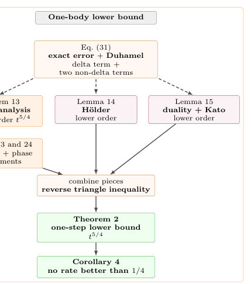
<figcaption class="paper-figure-caption"><b>Fig 1.</b> Figure 1: Proof roadmap. Solid arrows indicate steps that lead to the subsequent result, while dashed arrows indicate auxiliary estimates that suffice to establish the corresponding step.</figcaption>
</figure>
<figure class="paper-figure-card">
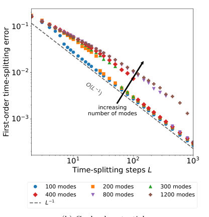
<figcaption class="paper-figure-caption"><b>Fig 2.</b> Figure 2: (a) Log-log plot of the global first-order splitting error ξ(K) L (T; c0) = ∥cTS(T) −cex(T)∥ℓ2 versus the number of splitting steps L for the radial Yukawa Hamiltonian at T = 1, with Z = 1, µ = 0.2, R = 50, and K ∈{100, 200, 300, 400, 800, 1200}. The initial state is a common approximate Yukawa ground state obtained from the largest reference truncation and projected onto each smaller Galerkin space. The dashed line has slope L−1 and is included only as a finite-dimensional reference. As K increases, the curves move upward and the apparent transition toward the fixed K first-order regime is delayed. This panel is not intended as direct evidence of a global L−1/4 asymptotic. (b)...</figcaption>
</figure>
<figure class="paper-figure-card">
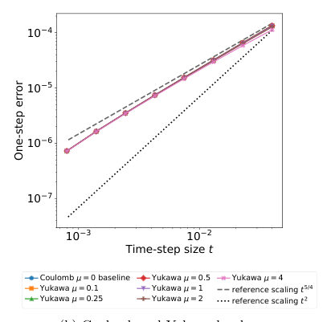
<figcaption class="paper-figure-caption"><b>Fig 3.</b> Figure 3: (a) Log-log plot of the global first-order splitting error for the regularized Gaussian Hamiltonian VReg(r) = −Ze−αr2 under the same ℓ= 0 radial Galerkin discretization, with Z = 1, α = 0.2, R = 50, and K ∈{100, 200, 300, 400, 800, 1200}. The initial state is a common approximate regularized Gaussian ground state obtained from a reference truncation Kref = 1200 and projected onto each smaller Galerkin space. The curves nearly overlap and follow the dashed L−1 reference line, indicating standard first-order splitting behavior for this smooth regular potential. (b) Log-log plot of the one-step local error ∥Eµ(∆t)∥ℓ2 versus ∆t for Coulomb (µ = 0) and Yukawa µ ∈{0.1, 0.25, 0.5, 1, 2,...</figcaption>
</figure>
<figure class="paper-figure-card">
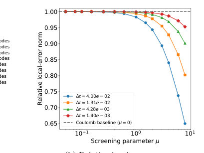
<figcaption class="paper-figure-caption"><b>Fig 4.</b> Figure 4: (a) Log-log plot of the one-step local splitting error versus the time-step size t for Coulomb and Yukawa potentials, using the corresponding normalized Galerkin ground state as the initial state for each potential. The radial Galerkin truncation uses R = 40, Z = 1, Yukawa screening parameter µ = 1, and K ∈{1000, 1200, 1400, 1800}. The reference slopes are t5/4 and t2. Both Coulomb and Yukawa follow the t5/4 scaling; since the initial state is recomputed for each potential, the vertical separation should be interpreted qualitatively rather than as a fixed state screening prefactor. (b) Semilog plot of the relative local-error norm Rµ(∆t) = ∥Eµ(∆t)∥ℓ2/∥e0(∆t)∥ℓ2 as a function of...</figcaption>
</figure>
</div>

<p><strong>Summary.</strong> This paper rigorously analyzes the error convergence of splitting methods applied to simulate quantum dynamics with a Yukawa potential. It proves that the simulation achieves an optimal global time-step convergence rate of $O(t^{1/4})$ by establishing both upper and lower bounds. The work is significant for providing mathematically rigorous tools for simulating many-body systems where interactions are short-ranged but singular at the origin.</p>
<p><strong>Why it may be interesting.</strong> This work provides highly technical convergence guarantees for simulating complex quantum many-body systems, which directly informs the development of stable and efficient numerical algorithms for condensed matter simulations.</p>
<details>
<summary>Detailed structure</summary>
<p><strong>Main problem.</strong> The paper analyzes the convergence rate of splitting methods used to simulate quantum dynamics governed by the Schrödinger equation with a Yukawa potential.</p>
<p><strong>Main result.</strong> It proves a global O(t^1/4) convergence rate for many-body interactions, establishing this rate as sharp by deriving a corresponding lower bound. The result shows that the short-range nature of the Yukawa potential does not improve upon the leading error obstruction dictated by the origin singularity.</p>
<p><strong>Method.</strong> The analysis employs rigorous mathematical techniques including Sobolev estimates, Fourier analysis, and Kato smoothing to derive both upper (convergence) and lower bounds on the time evolution error.</p>
<p><strong>Model / system.</strong> The system is a many-body quantum mechanical model described by the Schrödinger equation with a Yukawa potential, which acts as a screened Coulomb interaction. The Hamiltonian is $H_\mu = -\Delta + V_\mu$, where $V_\mu$ decays exponentially at large distances.</p>
<p><strong>Key observables.</strong> The primary observable is the error norm $\left\|U_{1,\mu}(t)^L\psi_0 - e^{-iT}H_\mu\psi_0
ight\|_{L^2(\mathbb{R}^{3N})}$, which measures the difference between the numerical approximation and the exact evolution.</p>
<p><strong>Important parameters / regimes.</strong> The key parameters are the time step ($\Delta t$ or $t$), the total time ($T$), the number of particles ($N$), and the screening parameter ($\mu$) defining the potential range.</p>
<p><strong>Assumptions / limitations.</strong> The analysis requires working in strong norms, specifically the $H^2(\mathbb{R}^{3N})$ domain, due to the unbounded kinetic energy and singular nature of the potential at the origin.</p>
<p><strong>Paper structure.</strong> The paper builds from establishing the physical model (Yukawa potential) to developing rigorous error estimates. It first proves an upper bound on the splitting error, leveraging novel system-size Sobolev estimates. Subsequently, it establishes a matching lower bound using Fourier analysis and Kato smoothing to prove the rate is optimal.</p>
</details>
<details>
<summary>Abstract</summary>
<p>Splitting methods are among the most classical and fundamental tools for the simulation of quantum dynamics, and their importance has grown further with the rise of quantum computing. In this work, we analyze the Schrödinger equation with Yukawa potential, a physically relevant and widely used model potential. It may be viewed as a Coulomb interaction with exponential decay at spatial infinity, preserving the Coulomb singularity at the origin while removing the long-range Coulomb tail. We prove that the operator splitting for this unbounded Hamiltonian achieves a global $1/4$-order convergence rate in the time step for many-body Yukawa interactions, with explicit polynomial dependence on the number of particles. The result holds for all initial wavefunctions in $H^2(\mathbb R^{3N})$, the natural domain of the Hamiltonian, and our numerical experiments are consistent with the theoretical estimates. To identify the sharp obstruction behind this rate, we prove a short-time lower bound in the one-body setting of order $t^{5/4}$ for the one-step error, which rules out any uniform global estimate of order better than $1/4$ in general. This agreement with the optimal $1/4$ rate in the Coulomb case is particularly interesting, as Yukawa potential is short-ranged compared to Coulomb potential. For the many-body upper bound, one of the new technical ingredients is the explicit polynomial-in-system-size Sobolev estimates of many-body Yukawa systems. These estimates are crucial for obtaining fully a priori bounds that depend only on the norms of the initial states, rather than on the solution at time $t$. For the one-body lower bound, we leverage a new analysis argument based on Fourier analysis and Kato smoothing.</p>
</details>
<p><sub><a href="#top">↑ back to top</a></sub></p>

<p><a id="paper-2607.12751"></a></p>
<h3 id="traceable-in-situ-microwave-power-measurement-at-the-cryogenic-device-plane-in-a-dilution-refrigerator"><a href="http://arxiv.org/abs/2607.12751v1">Traceable In Situ Microwave Power Measurement at the Cryogenic Device Plane in a Dilution Refrigerator</a></h3>
<p><strong>Authors:</strong> Paolo Panetta, Andrea Celotto, Alessandro Alocco, Bernardo Galvano, Luca Fasolo, Emanuele Palumbo, Luca Callegaro, Luca Oberto, Patrizia Livreri, Emanuele Enrico<br>
<strong>Type:</strong> experiment · <strong>Category:</strong> other · <strong>PDF:</strong> <a href="https://arxiv.org/pdf/2607.12751v1">https://arxiv.org/pdf/2607.12751v1</a><br>
<strong>Analysis basis:</strong> full PDF text, analyzed in chunks
<strong>Topic relevance:</strong> <code>QC/QI experiment</code> <strong>1/5</strong> · <code>methods for driven-dissipative</code> <strong>1/5</strong> · <code>quantum measurements</code> <strong>1/5</strong></p>
<div class="figure-strip-hint">↔ Scroll figures horizontally</div>
<div class="paper-figures-scroll">
<figure class="paper-figure-card">
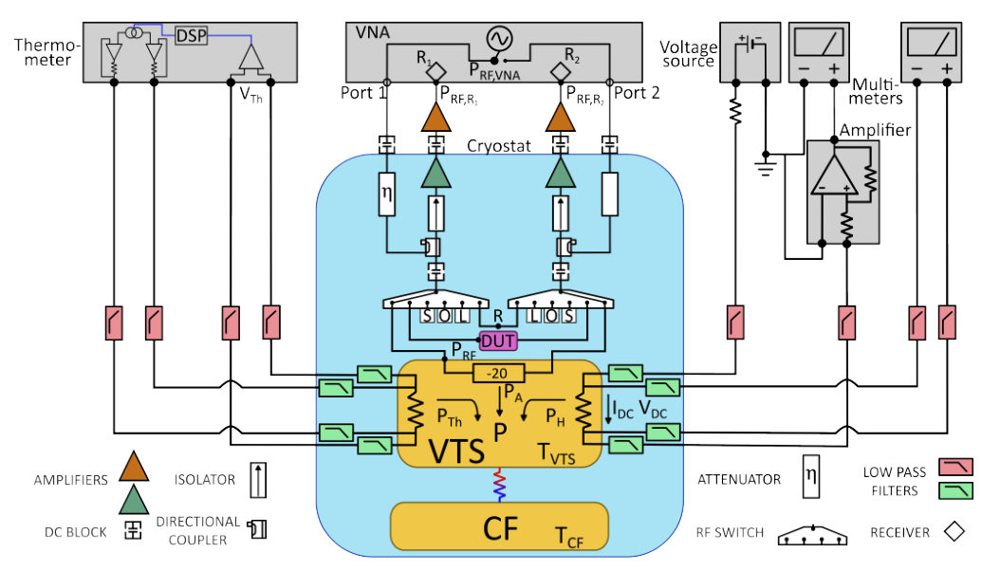
<figcaption class="paper-figure-caption"><b>Fig 1.</b> Fig. 1. Schematic of the experimental setup. A Variable Temperature Stage (VTS) is weakly thermally linked with the Cold Finger (CF) of a dilution refrigerator with baseplate temperature of ∼80 mK. VTS can be heated both with DC and RF through, respectively, a heater (PH) and a 20 dB attenuator (PA). Its temperature is measured with a resistance thermometry bridge (Th). Both Th and H are driven in DC with a 4-wire configuration. Two nominally equal RF lines are driven by Port 1 and Port 2 and read by receivers R1 and R2 of a Vector Network Analyzer (VNA). The input lines are attenuated at multiple stages and we call η the attenuation of the line connected to Port 1. The lines go through a...</figcaption>
</figure>
<figure class="paper-figure-card">
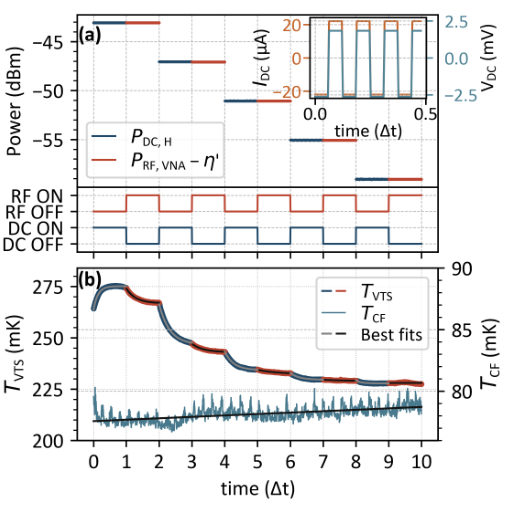
<figcaption class="paper-figure-caption"><b>Fig 2.</b> Fig. 2. Here, the time axis is normalized for ∆t = 77 minutes. (a) Power vs time plots. PDC,H is the measured power dissipated at H. PRF,VNA is the power delivered at VNA source and η′ is a preliminarily estimated measure of the total attenuation between source and DUT reference plane. VTS was alternately heated with DC and RF drives with a power step of 4 dB. When driven in DC, polarity of signal was swapped every ∼5 minutes to account for current amplifier drifts. In the inset, measured VDC and IDC are plotted. (b) TVTS and TCF vs time plots. TCF was measured to slightly drift of 0.09 mK/hour. Each interval of length ∆t of TVTS was fit with (4).</figcaption>
</figure>
<figure class="paper-figure-card">
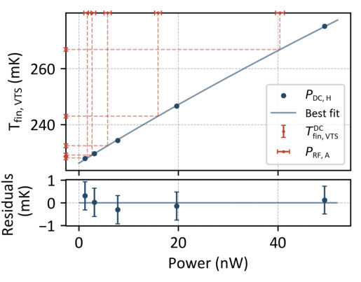
<figcaption class="paper-figure-caption"><b>Fig 3.</b> Fig. 3. Tfin,VTS vs Power. PDC,H data were fit with (5). Then (6) was inverted to obtain PRF,A(Tfin,VTS). A visual representation of the inversion idea is graphed in red. T RF fin,VTS on the y-axis are projected onto the best fit curve and then projected again on the x-axis. Uncertainties on the best fit parameters are taken into account by the uncertainty propagation formula of (7). Below, residuals of PDC,H from the best fit curve.</figcaption>
</figure>
</div>

<p><strong>Summary.</strong> This paper introduces a novel, traceable method for measuring microwave RF power directly at the cryogenic device plane within a dilution refrigerator. It achieves this by correlating measured DC heating power with absorbed RF power via thermal transient analysis of a Variable Temperature Stage (VTS). The technique integrates advanced cryogenic S-parameter calibration to provide reliable power readings essential for quantum circuit characterization.</p>
<p><strong>Why it may be interesting.</strong> While focused on metrology, this work provides a critical enabling technology for quantum physics experiments by ensuring that the input power to sensitive qubits or superconducting circuits is known with traceable accuracy.</p>
<details>
<summary>Detailed structure</summary>
<p><strong>Main problem.</strong> Accurately measuring microwave power delivered to a superconducting quantum circuit (DUT) inside a dilution refrigerator is challenging due to various cryogenic signal path losses and mismatches.</p>
<p><strong>Main result.</strong> The authors successfully demonstrated an in situ measurement method, achieving relative standard uncertainties between 2% and 40% across the tested power range (-43 to -58 dBm).</p>
<p><strong>Method.</strong> The technique combines AC/DC thermal power transfer measurements using a Variable Temperature Stage (VTS) with cryogenic two-port scattering parameter (S-parameter) calibration.</p>
<p><strong>Model / system.</strong> The experiment is performed in a dilution refrigerator, utilizing a custom VTS weakly coupled to the cold finger. The system's thermal dynamics are modeled by analyzing transient temperature changes when heated alternately by DC current and microwave power dissipated via an attenuator.</p>
<p><strong>Key observables.</strong> VTS temperature ($T_{	ext{VTS}}$), measured DC heating power ($    ext{P}<em ext_RF_A="ext{RF,A">{    ext{DC,H}}$), and RF attenuated power ($   ext{P}</em>$).}</p>
<p><strong>Important parameters / regimes.</strong> The measurement range covers powers from -43 dBm to -58 dBm; key derived parameters include the thermal conductance ($G_0$) and background heat load ($P_0$).</p>
<p><strong>Assumptions / limitations.</strong> The method assumes that the temperature difference across the attenuator is negligible compared to uncertainty, and it relies on accurate SOLR calibration for S-parameters.</p>
<p><strong>Figures summary.</strong> Figure 1 schematically illustrates the experimental setup involving the VTS weakly linked to the Cold Finger, showing connections for DC heating, RF attenuation, and thermometry.</p>
<p><strong>Paper structure.</strong> The paper establishes the difficulty of cryogenic power measurement, details the combined thermal/electrical methodology (using transient fitting and steady-state analysis), presents the necessary S-parameter calibration steps, and concludes with experimental results and uncertainty quantification.</p>
</details>
<details>
<summary>Abstract</summary>
<p>Accurate knowledge of the microwave power delivered to a cryogenic device under test (DUT) is essential for the characterization and operation of superconducting quantum circuits. However, this information is difficult to obtain inside dilution refrigerators because of distributed attenuation, impedance mismatch, switch-path repeatability, and temperature-dependent microwave components. This paper presents an in situ measurement method for RF power at the cryogenic device plane. The method uses a custom variable temperature stage (VTS) as a cryogenic thermal-transfer element. The TVS is alternately heated by a four-wire DC heater and by microwave power dissipated in a 20 dB pass-through attenuator. By fitting the thermal transients and comparing the corresponding steady-state temperatures, the absorbed microwave power is inferred from a directly measured DC electrical power through an AC/DC substitution procedure. The finite reflection and transmission of the attenuator are then accounted for by cryogenic two-port scattering-parameter measurements based on a switch-assisted Short--Open--Load--Reciprocal calibration, so that the result is referred to the DUT reference plane. The system is demonstrated in a dilution refrigerator with powers between -43 and -58 dBm at the DUT input plane. The demonstrated relative standard uncertainty ranges from about 2% at -43.9 dBm to about 40% at -57.6 dBm. The proposed approach combines thermal RF power transfer, cryogenic S-parameter correction, and uncertainty evaluation in a measurement architecture compatible with quantum-device experiments, providing a practical route toward traceable microwave-power calibration at millikelvin stages.</p>
</details>
<p><sub><a href="#top">↑ back to top</a></sub></p>

<p><a id="paper-2607.12487"></a></p>
<h3 id="benchmarking-loss-functions-for-trainable-quantum-feature-maps"><a href="http://arxiv.org/abs/2607.12487v1">Benchmarking loss functions for trainable quantum feature maps</a></h3>
<p><strong>Authors:</strong> Nguyen Dinh Quyen, Vu Tuan Hai, Quoc Chuong Nguyen, Le Bin Ho, Lan Nguyen Tran<br>
<strong>Type:</strong> both · <strong>Category:</strong> quantum information and computing · <strong>PDF:</strong> <a href="https://arxiv.org/pdf/2607.12487v1">https://arxiv.org/pdf/2607.12487v1</a><br>
<strong>Analysis basis:</strong> full PDF text, analyzed in chunks
<strong>Topic relevance:</strong> <code>QC/QI experiment</code> <strong>1/5</strong> · <code>quantum measurements</code> <strong>1/5</strong></p>
<div class="figure-strip-hint">↔ Scroll figures horizontally</div>
<div class="paper-figures-scroll">
<figure class="paper-figure-card">
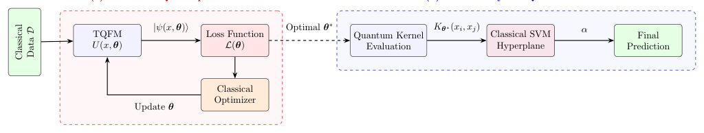
<figcaption class="paper-figure-caption"><b>Fig 1.</b> FIG. 1. An end-to-end operational workflow of the TQFM-based QSVM model. Phase 1 focuses on optimizing the TQFM via the loss function to discover the optimal parameter θ∗. Phase 2 uses these optimized quantum states to construct the pairwise kernel, which is subsequently fed into a classical SVM solver to determine the maximal-margin separating hyperplane.</figcaption>
</figure>
<figure class="paper-figure-card">
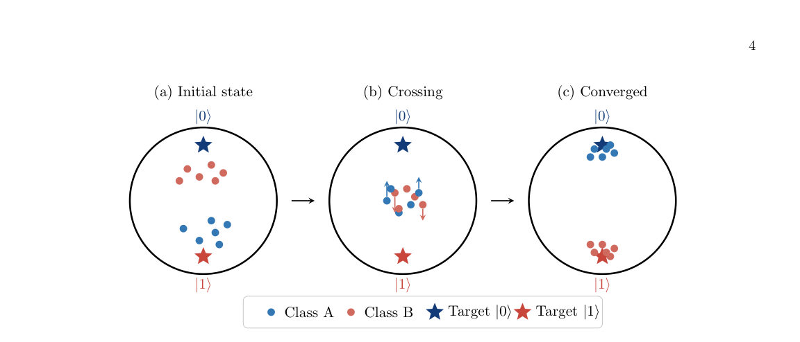
<figcaption class="paper-figure-caption"><b>Fig 2.</b> FIG. 2. Conceptual representation of the trajectory crossing problem during fixed-target optimization. (a) At initialization, data points from Class A (blue) and Class B (red) are misaligned with their orthogonal targets. (b) As the model attempts to correct this, the ensembles are forced to cross paths. This intersection creates a severe dynamical bottleneck, maximizing inter-class overlap and causing the sharp drop in accuracy observed during early training iterations. (c) Successful convergence is achieved only if the loss function’s gradient is strong enough to push the parameters through this crossing zone.</figcaption>
</figure>
<figure class="paper-figure-card">
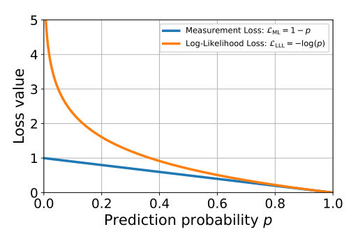
<figcaption class="paper-figure-caption"><b>Fig 3.</b> FIG. 3. Comparison between the ML LML = 1 −p and the LLL LLLL = −log(p) as a function of the prediction proba- bility p. Unlike the linear ML, the LLL grows rapidly when p becomes small, assigning larger penalties to poorly classified samples and thereby providing a stronger optimization signal during training.</figcaption>
</figure>
<figure class="paper-figure-card">
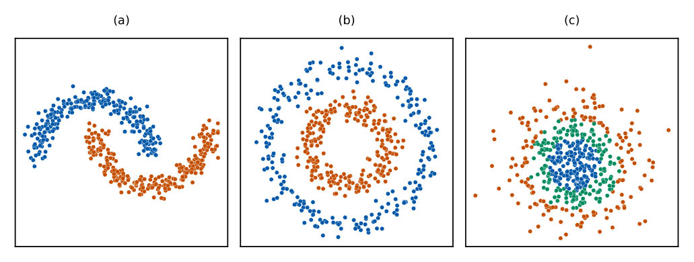
<figcaption class="paper-figure-caption"><b>Fig 4.</b> FIG. 4. Visualization of the 2D synthetic datasets used for empirical evaluation. (a) The moons dataset features two interleaving half-circles. (b) The circles dataset consists of two non-linearly separable concentric circles. (c) The gaussian dataset is partitioned into three concentric classes based on a multidimensional Gaussian distribution.</figcaption>
</figure>
<figure class="paper-figure-card">
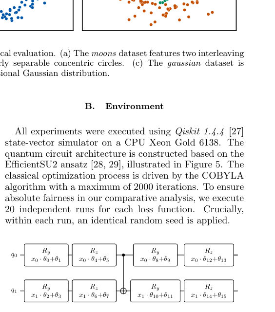
<figcaption class="paper-figure-caption"><b>Fig 5.</b> FIG. 5. The diagram of 2-qubit EfficientSU2 circuit. Each layer encodes the input x and parameters θ (xj, θj denote the jth entry of x, θ, respectively) jointly in Ry, Rz rotation gates, followed by a chain of CNOT entangling gates. The structure is repeated to form a circuit of layers.</figcaption>
</figure>
</div>

<p><strong>Summary.</strong> This work systematically benchmarks three loss functions for training quantum feature maps in Quantum Machine Learning. By comparing Distance Loss, Measurement Loss, and Log-Likelihood Loss, the authors demonstrate that LLL offers a superior balance of optimization stability and linear computational scaling. This provides crucial practical guidance for designing robust variational quantum algorithms.</p>
<p><strong>Why it may be interesting.</strong> While focused on QML classification rather than fundamental AMO physics, the comparison of optimization objectives (loss landscapes) is highly relevant to understanding variational quantum algorithms used in simulating complex many-body Hamiltonians or characterizing open quantum systems.</p>
<details>
<summary>Detailed structure</summary>
<p><strong>Main problem.</strong> The paper benchmarks different loss functions for Trainable Quantum Feature Maps (TQFMs) used in Quantum Machine Learning (QML) to improve classification performance.</p>
<p><strong>Main result.</strong> Log-Likelihood Loss consistently achieves more stable optimization than Measurement Loss while maintaining the desirable linear computational complexity, offering practical guidance for QML design.</p>
<p><strong>Method.</strong> The authors compare three loss functions—Distance Loss, Measurement Loss, and Log-Likelihood Loss—by optimizing TQFMs using numerical experiments on various datasets.</p>
<p><strong>Model / system.</strong> The model involves Quantum Support Vector Machines (QSVMs) utilizing parameterized quantum circuits (TQFMs) to encode classical data into quantum states for classification tasks.</p>
<p><strong>Key observables.</strong> Optimization dynamics, state overlap convergence, Mean Classification Accuracy, and computational scaling ($O(M^2)$ vs $O(M)$).</p>
<p><strong>Important parameters / regimes.</strong> Number of training samples ($M$), number of variational layers ($\#Layers$), and the specific loss function used.</p>
<p><strong>Assumptions / limitations.</strong> The analysis assumes that optimizing the loss function guides the quantum state towards optimal class separation, although the final decision boundary often relies on a classical SVM classifier.</p>
<p><strong>Figures summary.</strong> Figures compare optimization dynamics (loss/overlap vs. iteration) for different losses; one figure illustrates the 'trajectory crossing problem' in ML-based objectives; and tables summarize classification accuracy across datasets and circuit depths.</p>
<p><strong>Paper structure.</strong> The paper systematically introduces TQFMs, details the mathematical formulation of DL, ML, and LLL loss functions, compares their computational costs ($O(M^2)$ vs $O(M)$), presents results on optimization stability and final test accuracy, and concludes with practical guidelines.</p>
</details>
<details>
<summary>Abstract</summary>
<p>Many quantum machine learning models employ quantum feature maps to encode classical data into quantum states. While fixed feature maps often lack sufficient expressivity for complex nonlinear classification tasks, trainable quantum feature maps (TQFMs) enable adaptive quantum kernels with enhanced learning capability. Different loss functions can induce distinct optimization dynamics, yet their effects remain poorly understood. In this work, we apply the Log-Likelihood Loss function for TQFMs and provide a systematic comparison with Distance Loss and Measurement Loss. Through extensive numerical experiments, we compare their optimization dynamics, computational costs, and classification performance. Our results show that Log-Likelihood Loss consistently achieves more stable optimization than Measurement Loss while retaining linear computational complexity. The resulting benchmark offers practical guidance for balancing trainability, computational efficiency, and predictive performance in quantum kernel optimization.</p>
</details>
<p><sub><a href="#top">↑ back to top</a></sub></p>

<p><a id="paper-2607.12442"></a></p>
<h3 id="magnetothermopower-and-particle-hole-symmetry-in-a-cuprate-strange-metal"><a href="http://arxiv.org/abs/2607.12442v1">Magnetothermopower and particle-hole symmetry in a cuprate strange metal</a></h3>
<p><strong>Authors:</strong> Yu-Te Hsu, Matija Čulo, Thom Ottenbros, Yingkai Huang, Jake Ayres, Steffen Wiedmann, Mikhail I. Katsnelson, Nigel E. Hussey, Mikhail Titov<br>
<strong>Type:</strong> both · <strong>Category:</strong> strongly correlated electrons · <strong>PDF:</strong> <a href="https://arxiv.org/pdf/2607.12442v1">https://arxiv.org/pdf/2607.12442v1</a><br>
<strong>Analysis basis:</strong> full PDF text, analyzed in chunks
<strong>Topic relevance:</strong> <code>Keldysh / 2PI / non-Gaussian methods</code> <strong>1/5</strong> · <code>non-equilibrium dynamics</code> <strong>1/5</strong></p>
<div class="figure-strip-hint">↔ Scroll figures horizontally</div>
<div class="paper-figures-scroll">
<figure class="paper-figure-card">
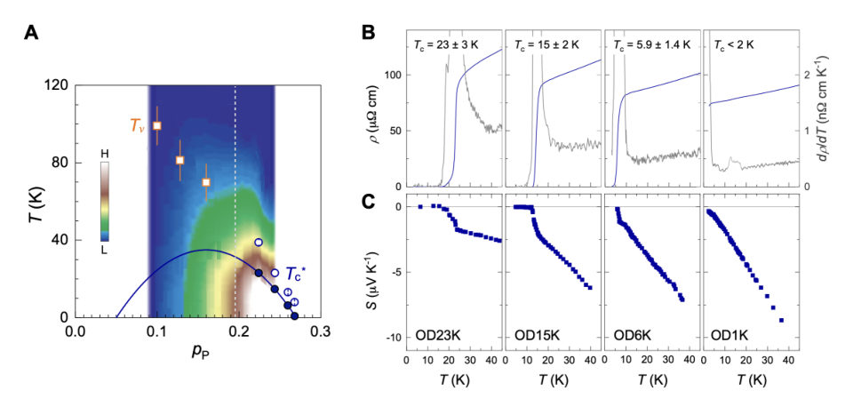
<figcaption class="paper-figure-caption"><b>Fig 1.</b> FIG. 1. Temperature-doping phase diagram of Bi2201 and transport characterization of the crystals studied in this work. (A) Characteristic temperatures of Bi2201 plotted against the hole doping level extracted using the Presland relation (pP). Tν is the onset temperature of a finite Nernst signal observed in underdoped Bi2201 [43] and T ∗ c is the onset temperature of SC fluctuations inferred from resistivity measurements. The color contour reflects the spectral weight associated with Cooper pairing previously determined using angle-resolved photoemission spectroscopy measurements [36]. Vertical dashed line marks the location of pseudogap opening in Bi2201 [44]. The color contour and...</figcaption>
</figure>
<figure class="paper-figure-card">
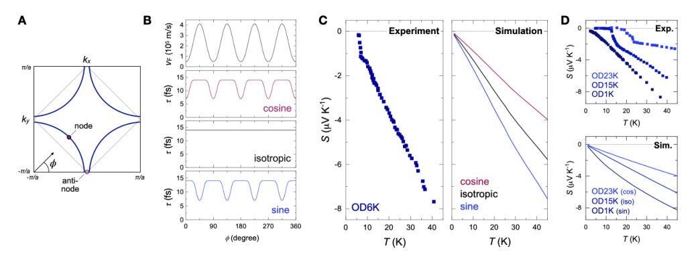
<figcaption class="paper-figure-caption"><b>Fig 2.</b> FIG. 2. Fermi surface parametrization and calculated Seebeck coefficients using the Boltzmann transport theory. (A) Fermi surface derived for OD6K using the tight-binding model described in [45]. (B) Fermi velocity vF and carrier lifetime τ parametrizations as a function of azimuthal angle ϕ. (C) S(T) measured on OD6K (left) and simulated (right) based on the Fermi surface parametrization shown in (A), considering three cases of carrier lifetime anisotropy. (D) Experimental and simulated S(T) of OD23K, OD15K, and OD1K. The form of τ-anisotropy for each optimized simulation is specified in brackets.</figcaption>
</figure>
<figure class="paper-figure-card">

<figcaption class="paper-figure-caption"><b>Fig 3.</b> Figure 3 shows the magnetic-field dependence of the absolute Seebeck coefficient |S/T(H)| for all Bi2201 sam- ples within the temperature range 3.6 K ≤T ≤45 K. A clear transition from a superconducting to a mixed state can be seen for all samples with a Tc &gt; 2 K. All samples exhibit a highly field-dependent |S/T| with a peak struc- ture that becomes more prominent with decreasing T. Notably, the field derivative of the magnetothermopower (MTEP) at 35 T is positive (i. e. d|S/T|/d(µ0H) &gt; 0) at T ∼40 K and becomes negative as T decreases. Such a complex MTEP has been previously reported for heavy- fermion superconductor CeCoIn5 [54] and interpreted as a rapid change in entropy flow in the...</figcaption>
</figure>
<figure class="paper-figure-card">

<figcaption class="paper-figure-caption"><b>Fig 4.</b> FIG. 3. Absolute Seebeck coefficient |S/T| of OD Bi2201 measured in magnetic fields up to 35 T. Note that at high temperatures |S/T| increases with magnetic field, whereas at low T, |S/T| decreases with magnetic field in the high-field regime.</figcaption>
</figure>
<figure class="paper-figure-card">

<figcaption class="paper-figure-caption"><b>Fig 5.</b> FIG. 4. Form of the normal-state magneto-Seebeck effect and discrepancy between electronic structure-derived and experimental S(H) for OD6K. (A) Absolute Seebeck coefficient |S/T| measured in 0 T and 35 T. A good agreement between the experimental and electronic structure-derived |S/T| is found at 0 T at T &gt; Tc, while S/T measured in 35 T shows a sharp negative deviation from the zero-field behavior. (B) Left: Calculated |S(H)| using the same set of parameters as in Fig. 2 Right: Experimental |S(H)| which shows a pronounced and complex H dependence with varying T. (C) Field-dependent |S/T| at T ≫Tc. All three traces show a similar dependence of |S/T(H)| that can be described by the standard...</figcaption>
</figure>
</div>

<p><strong>Summary.</strong> This work investigates strange metallicity in overdoped cuprates by measuring magnetothermopower up to 35 T. The key finding is that the anomalous field dependence cannot be explained by standard theory, suggesting two coexisting charge carrier sectors. The authors propose a model where conventional Fermi-liquid behavior coexists with an unusual, particle-hole symmetric component linked to superconducting fluctuations.</p>
<p><strong>Why it may be interesting.</strong> While focused on cuprates, the concept of separating transport into distinct symmetry sectors (e.g., particle-hole symmetric vs. asymmetric) is relevant for understanding exotic quantum states in other correlated systems where multiple degrees of freedom coexist.</p>
<details>
<summary>Detailed structure</summary>
<p><strong>Main problem.</strong> The study aims to understand the microscopic origin of 'strange metallicity' observed in overdoped cuprate superconductors by analyzing their transport properties.</p>
<p><strong>Main result.</strong> The anomalous magnetothermopower suggests the existence of two distinct charge carrier sectors: a conventional Fermi-liquid sector and a nearly particle-hole symmetric sector dominated by superconducting fluctuations above Tc.</p>
<p><strong>Method.</strong> The research combines high-field magnetothermopower measurements with theoretical modeling using Boltzmann transport theory and phenomenological real-space models.</p>
<p><strong>Model / system.</strong> The physical system is overdoped (Bi,Pb)2(Sr,La)2CuO6+delta single crystals. The model proposes disconnected Fermi-liquid islands embedded in a compensated Dirac liquid of d-wave Bogoliubov quasiparticles.</p>
<p><strong>Key observables.</strong> Magnetothermopower $S(H)$, zero-field Seebeck coefficient $S(T)$, Hall resistivity $
ho_{xy}(T, H)$, and magnetoresistance (MR).</p>
<p><strong>Important parameters / regimes.</strong> Magnetic fields up to 35 T; temperature dependence near Tc; doping level in cuprates.</p>
<p><strong>Assumptions / limitations.</strong> The model is phenomenological, assuming the coexistence of two distinct transport sectors governed by different symmetries (particle-hole asymmetry).</p>
<p><strong>Figures summary.</strong> Figures show $
ho_{ab}(T)$ and $S(T)$ vs. doping, detailed characterization of magnetothermopower $|S/T|$ vs. magnetic field, and procedures for symmetrizing the measured thermoelectric voltages.</p>
<p><strong>Paper structure.</strong> The paper progresses by first establishing the failure of standard Boltzmann theory to explain field-dependent thermopower, leading to the hypothesis of multiple transport sectors; it then develops a two-fluid model (FL islands in a Dirac liquid) to reconcile zero-field and high-field anomalies.</p>
</details>
<details>
<summary>Abstract</summary>
<p>Here, we report magnetothermopower measurements on overdoped (Bi,Pb)2(Sr,La)2CuO6+delta (Bi2201) single crystals in magnetic fields up to 35 T. Whereas the temperature dependence of the zero-field Seebeck coefficient S(T) can be captured using Boltzmann transport theory, the field-dependent response S(H) cannot. Instead, the magnetothermopower contains a large additional contribution whose field and temperature dependence is consistent with the presence of short-range superconducting order well above Tc. Combined with earlier Hall and magnetoresistance results, these data imply that the overdoped cuprate strange metal contains two transport sectors with distinct particle-hole symmetry: a conventional particle-hole-asymmetric Fermi-liquid (FL) contribution governing the Hall effect and the zero-field thermopower, and a nearly particle-hole-symmetric sector dominating the anomalous longitudinal magnetotransport. We formulate a phenomenological real-space model in which disconnected FL islands are embedded in a compensated Dirac liquid of phase-incoherent d-wave Bogoliubov quasiparticles. This picture reconciles conventional zero-field transport with anomalous magnetothermopower and magnetoresistance and offers a concrete framework for thinking about strange metallicity in overdoped cuprates.</p>
</details>
<p><sub><a href="#top">↑ back to top</a></sub></p>

<p><a id="paper-2607.12532"></a></p>
<h3 id="quantum-weakest-preconditions-revisited-pre-expectations-for-expected-runtime-analysis"><a href="http://arxiv.org/abs/2607.12532v1">Quantum Weakest Preconditions Revisited: Pre-expectations for Expected Runtime Analysis</a></h3>
<p><strong>Authors:</strong> Christina Gehnen, Dominique Unruh, Joost-Pieter Katoen<br>
<strong>Type:</strong> theory · <strong>Category:</strong> quantum information and computing · <strong>PDF:</strong> <a href="https://arxiv.org/pdf/2607.12532v1">https://arxiv.org/pdf/2607.12532v1</a><br>
<strong>Analysis basis:</strong> full PDF text, analyzed in chunks
<strong>Topic relevance:</strong> <code>methods for driven-dissipative</code> <strong>1/5</strong> · <code>quantum measurements</code> <strong>1/5</strong></p>
<div class="figure-strip-hint">↔ Scroll figures horizontally</div>
<div class="paper-figures-scroll">
<figure class="paper-figure-card">

<figcaption class="paper-figure-caption"><b>Fig 1.</b> Fig. 1. A quantum program where 𝑈2 maps |𝑛⟩to |2𝑛⟩and 𝑈−1 maps |𝑛⟩to |𝑛−1⟩(to make them unitary, one can for example add ancilla qubits which we omit to not complicate the analysis). The measurement operators are 𝑀0 = |0⟩⟨0|, 𝑀1 = |1⟩⟨1| for the first loop on variable 𝑞2 and 𝑀0 = |0⟩⟨0|, 𝑀1 = I −|0⟩⟨0| for the second loop on variable 𝑞1.</figcaption>
</figure>
</div>

<p><strong>Summary.</strong> This paper introduces a novel weakest pre-expectation framework designed to analyze the expected runtime of general quantum programs. By extending traditional verification tools to handle reward statements and infinite expectations, it overcomes limitations that previously restricted analysis to bounded or terminating cases. This advances the theoretical understanding of resource quantification in quantum computation.</p>
<p><strong>Why it may be interesting.</strong> It provides rigorous tools (weakest pre-expectations) to analyze resource usage (expected time) in complex quantum algorithms, which is crucial for assessing the feasibility of large-scale quantum computation.</p>
<details>
<summary>Detailed structure</summary>
<p><strong>Main problem.</strong> The paper revisits quantum weakest preconditions to develop a framework for analyzing the expected runtime of general quantum programs without requiring an upper bound on that runtime.</p>
<p><strong>Main result.</strong> A novel pre-expectation framework is introduced, allowing analysis of expected runtimes even when they are potentially infinite, by defining weakest pre-expectations for quantum while loops with rewards.</p>
<p><strong>Method.</strong> The authors define a syntactic and semantic calculus for 'qrWhile' programs, utilizing weak pre-expectations that incorporate reward statements to track expected values.</p>
<p><strong>Model / system.</strong> The model is general quantum computation involving density operators on Hilbert spaces, supporting unbounded operators and control flow structures like while loops.</p>
<p><strong>Key observables.</strong> Expected runtime ($\mathbb{E}[	ext{ertJ} \dots]$), rewards, and the weak pre-expectation itself.</p>
<p><strong>Important parameters / regimes.</strong> The analysis handles potentially infinite expected runtimes and operates in settings involving unbounded operators.</p>
<p><strong>Assumptions / limitations.</strong> Previous work often required programs to be Almost Surely Terminating (AST) or restricted to bounded preconditions; this framework aims to overcome those limitations.</p>
<p><strong>Paper structure.</strong> The paper builds from foundational concepts of Hilbert spaces and operators, defines the necessary semantics for quantum programs with rewards, establishes the weakest pre-expectation calculus, and finally demonstrates its application to compute expected runtimes via syntactic transformations.</p>
</details>
<details>
<summary>Abstract</summary>
<p>Quantum weakest preconditions are a fundamental tool for program verification of quantum programs. Many variations have been reported in the literature. We revisit quantum weakest preconditions from the perspective of expected runtime analysis of quantum programs and introduce a novel pre-expectation framework that enables to reason about the preconditions of quantum programs without the need of an upper bound. This is particularly interesting for quantum programs involving reward statements. The overall goal is to analyze runtime behavior even in the case of programs with potentially infinite expected runtime. This paper presents several ways to do so, e.g., a program transformation such that the expected runtime of a quantum program can be expressed using the weakest pre-expectation calculus with rewards.</p>
</details>
<p><sub><a href="#top">↑ back to top</a></sub></p>

<p><a id="paper-2607.12773"></a></p>
<h3 id="emergent-math862math-superconductivity-from-the-interplay-between-electronic-correlations-and-electron-phonon-coupling-in-math863math"><a href="http://arxiv.org/abs/2607.12773v1">Emergent $s+id$ Superconductivity from the Interplay between Electronic Correlations and Electron-Phonon Coupling in $\mathrm{R}_{1-x}\mathrm{Sr}_x\mathrm{NiO}_2$</a></h3>
<p><strong>Authors:</strong> Zi Yuan, Jun Zhan, Xianxin Wu, Shaozhi Li<br>
<strong>Type:</strong> theory · <strong>Category:</strong> strongly correlated electrons · <strong>PDF:</strong> <a href="https://arxiv.org/pdf/2607.12773v1">https://arxiv.org/pdf/2607.12773v1</a><br>
<strong>Analysis basis:</strong> full PDF text, analyzed in chunks
<strong>Topic relevance:</strong> <code>Keldysh / 2PI / non-Gaussian methods</code> <strong>1/5</strong></p>
<div class="figure-strip-hint">↔ Scroll figures horizontally</div>
<div class="paper-figures-scroll">
<figure class="paper-figure-card">

<figcaption class="paper-figure-caption"><b>Fig 1.</b> FIG. 1. Phonon properties of LaNiO2. (a) Phonon disper- sion. (b) Electron-phonon coupling function α2F(ω). (c) A1g vibration mode of the in-plane oxygen atoms. (d) A1g vibra- tion mode for the effective two-orbital model. IO stands for interstitial orbital.</figcaption>
</figure>
<figure class="paper-figure-card">

<figcaption class="paper-figure-caption"><b>Fig 2.</b> FIG. 2. (a, b) Phase diagrams in the plane of temperature T and electron–phonon coupling λ for electron densities n = 1 and n = 0.8, respectively. (c, d) The averaged superconduct- ing order parameter Φd(s) γ as a function of temperature for various values of λ at n = 1 and n = 0.8, respectively.</figcaption>
</figure>
<figure class="paper-figure-card">

<figcaption class="paper-figure-caption"><b>Fig 3.</b> FIG. 3. (a) Phase diagram in the (n, λ) plane at T = 16 K. (b,c) Averaged d- and s-wave superconducting order param- eters, Φd 1 and Φs 2, as functions of n. (d,e) Orbital-resolved electron densities for the d and s orbitals.</figcaption>
</figure>
<figure class="paper-figure-card">

<figcaption class="paper-figure-caption"><b>Fig 4.</b> FIG. 5. Schematic illustration of the effect of oxygen vacan- cies on superconductivity in R0.8Sr0.2NiO2 (R = Nd, La) as a function of vacancy concentration. Here, nd and ns denote the electron densities on the Ni dx2−y2 and IO orbitals, re- spectively.</figcaption>
</figure>
<figure class="paper-figure-card">

<figcaption class="paper-figure-caption"><b>Fig 5.</b> FIG. 4. (a,c) Density of states D1(ω) for orbital 1 at fill- ings n = 0.8 and n = 0.9, respectively. (b,d) Density of states D2(ω) for orbital 2 at fillings n = 0.8 and n = 0.9, respectively. (e) Total density of states D(ω). The green dashed curve represents the single-particle tunneling spec- trum of Nd0.8Sr0.2NiO2 from Ref. [78].</figcaption>
</figure>
</div>

<p><strong>Summary.</strong> This theoretical study investigates how the combination of electronic correlations and lattice vibrations dictates superconducting symmetry in nickelates. By applying advanced many-body techniques, the authors predict that spin fluctuations favor d-wave pairing while electron-phonon coupling induces s-wave pairing, resulting in a mixed $s+id$ state. This mechanism offers a quantitative explanation for the experimentally observed spatial inhomogeneity of superconductivity.</p>
<p><strong>Why it may be interesting.</strong> The explicit inclusion of electron-phonon coupling alongside strong electronic correlations to predict a mixed pairing symmetry ($s+id$) provides a rich, multi-faceted model for unconventional superconductivity mechanisms relevant to condensed matter theory.</p>
<details>
<summary>Detailed structure</summary>
<p><strong>Main problem.</strong> The study aims to determine the microscopic origin of spatially varying superconducting symmetries observed experimentally in infinite-layer nickelates, moving beyond simple d-wave models.</p>
<p><strong>Main result.</strong> The interplay between spin fluctuations (driving d-wave pairing) and electron-phonon coupling (inducing s-wave pairing) leads to a mixed $s+id$ superconducting state. This $s$-wave component is highly sensitive to carrier density, suggesting local defects can explain observed symmetry variations.</p>
<p><strong>Method.</strong> The authors combine first-principles calculations with the Fluctuation-Exchange–Migdal-Eliashberg (FLEX–ME) theory to model pairing mechanisms.</p>
<p><strong>Model / system.</strong> The system is infinite-layer nickelates ($\mathrm{R}_{1-x}\mathrm{Sr}_x\mathrm{NiO}_2$), modeled using a two-orbital approach that incorporates on-site Coulomb repulsion ($U_d$) and electron-phonon coupling ($\mathcal{H}_{	ext{eph}}$) involving the oxygen $A_{1g}$ phonon mode.</p>
<p><strong>Key observables.</strong> Superconducting order parameters ($\Phi_d$ for d-orbital, $\Phi_s$ for IO orbital), superconducting transition temperatures ($T_{c}$), and SC gaps (measured in meV).</p>
<p><strong>Important parameters / regimes.</strong> Electron-phonon coupling strength ($\lambda$), carrier density ($n$), and the specific phonon mode involved ($A_{1g}$).</p>
<p><strong>Assumptions / limitations.</strong> The analysis relies on combining DFT calculations with FLEX–ME theory, which captures both spin fluctuation (d-wave) and charge fluctuation/e-ph (s-wave) pairing contributions.</p>
<p><strong>Figures summary.</strong> Figures illustrate phonon properties, phase diagrams showing SC regimes vs. $\lambda$ for fixed $n$, and temperature dependence of the superconducting order parameters ($\Phi_d, \Phi_s$).</p>
<p><strong>Paper structure.</strong> The paper progresses by establishing the physical system (nickelates) and the theoretical framework (FLEX–ME theory). It then calculates the contributions from spin fluctuations (d-wave) and e-ph coupling (s-wave), culminating in the prediction of an $s+id$ state whose stability depends critically on carrier density.</p>
</details>
<details>
<summary>Abstract</summary>
<p>Recent tunneling measurements on infinite-layer nickelates have revealed spatially varying superconducting symmetries, whose microscopic origin remains unclear. Motivated by this observation, we investigate the interplay between electron correlations and electron-phonon interactions in infinite-layer nickelates by combining first-principles calculations with the fluctuation-exchange-Migdal-Eliashberg theory. Our calculations show that spin fluctuations yield robust $d$-wave superconductivity on the Ni $d_{x^2-y^2}$ orbital, whereas electron-phonon coupling induces $s$-wave pairing on an interstitial orbital, leading to an $s+id$ superconducting state. The emergence of the $s$-wave component is strongly carrier-density dependent: an intermediate electron-phonon coupling of $λ=0.4$ stabilizes the $s+id$ state at $n=0.9$ but not at $n=0.8$. These results imply that local oxygen defects tune the local electron density and form finite-size domains with distinct pairing symmetries, offering a compelling explanation for the spatially inhomogeneous superconducting symmetries observed in experiments.</p>
</details>
<p><sub><a href="#top">↑ back to top</a></sub></p>

<p><a id="paper-2607.12258"></a></p>
<h3 id="emergent-interweaved-cdw-unoccupied-states-in-hole-doping-late2-with-element-substitution"><a href="http://arxiv.org/abs/2607.12258v1">Emergent interweaved CDW unoccupied states in hole-doping LaTe2 with element substitution</a></h3>
<p><strong>Authors:</strong> Shuya Xing, Hongyu Liu, Xu Chen, Zhenkai Xie, Zhongxu Wei, Shifeng Zhao, Wenping Zhou, Xin qi Li, Zhihai Cheng<br>
<strong>Type:</strong> both · <strong>Category:</strong> strongly correlated electrons · <strong>PDF:</strong> <a href="https://arxiv.org/pdf/2607.12258v1">https://arxiv.org/pdf/2607.12258v1</a><br>
<strong>Analysis basis:</strong> full PDF text, analyzed in chunks
<strong>Topic relevance:</strong> <code>Frenkel-Kontorova</code> <strong>1/5</strong></p>
<div class="figure-strip-hint">↔ Scroll figures horizontally</div>
<div class="paper-figures-scroll">
<figure class="paper-figure-card">

<figcaption class="paper-figure-caption"><b>Fig 1.</b> Fig. 1. Atomic structural of LaTe2/LaTe1.6Sb0.4, and charge density waves in LaTe1.6Sb0.4. (a) Left panel:</figcaption>
</figure>
<figure class="paper-figure-card">

<figcaption class="paper-figure-caption"><b>Fig 2.</b> Figure 1a shows a schematic diagram of the LaTe2 crystal, which adopts the Cu2Sb-type</figcaption>
</figure>
<figure class="paper-figure-card">

<figcaption class="paper-figure-caption"><b>Fig 3.</b> Fig. 2. Atomic resolution of Te-Te (Sb) cleavage surface in LaTe1.6Sb0.4 and its bias-dependent STM</figcaption>
</figure>
<figure class="paper-figure-card">

<figcaption class="paper-figure-caption"><b>Fig 4.</b> Fig. 3. Atomic-scale STM measurements of the LaTe1.6Sb0.4 in occupied state. (a-d) STM topography of</figcaption>
</figure>
<figure class="paper-figure-card">

<figcaption class="paper-figure-caption"><b>Fig 5.</b> Figure 3(e)-3(h) display the corresponding fast Fourier transform (FFT) patterns of Figs.</figcaption>
</figure>
</div>

<p><strong>Summary.</strong> This work investigates the complex Charge Density Wave (CDW) states in hole-doped layered tellurides using low-temperature STM. By analyzing unoccupied electronic states, the authors resolved three distinct, interweaved CDW wave vectors ($\mathbf{q}_1, \mathbf{q}_2, \mathbf{q}_3$) and a superstructure component ($\mathbf{p}$). These findings provide critical evidence linking the emergence of multiple CDWs to Fermi surface nesting driven by hole doping.</p>
<p><strong>Why it may be interesting.</strong> The detailed mapping of multiple, interweaved CDW vectors in relation to specific orbital character ($p$-orbitals) provides a rich playground for understanding charge instabilities and electronic correlations beyond simple mean-field models.</p>
<details>
<summary>Detailed structure</summary>
<p><strong>Main problem.</strong> The primary goal is elucidating the origin of complex, interweaved Charge Density Wave (CDW) states observed in hole-doped layered rare-earth tellurides.</p>
<p><strong>Main result.</strong> STM measurements revealed three distinct, superimposed CDW wave vectors ($q_1, q_2, q_3$) in unoccupied electronic states, which are theoretically linked to nesting vectors connecting $p_x$ and $p_y$ bands due to hole doping.</p>
<p><strong>Method.</strong> The study combines low-temperature Scanning Tunneling Microscopy (STM) on cleaved surfaces with Fast Fourier Transform (FFT) analysis of the resulting electronic maps, supplemented by theoretical calculations.</p>
<p><strong>Model / system.</strong> The system is layered rare-earth tellurides ($  ext{LaTe}_{2-x} ext{Sb}_x$), focusing on the $  ext{Te-Te}$ or $    ext{Sb}$-substituted sheets. The physics involves CDW formation, superstructure development, and electronic structure mapping in response to hole doping.</p>
<p><strong>Key observables.</strong> Three distinct CDW wave vectors ($\mathbf{q}_1 = 0.73 	ext{ a}^*$, $\mathbf{q}_2 = 0.47 	ext{ a}^*$, $\mathbf{q}_3 = 0.27 	ext{ a}^*$), the superstructure vector ($\mathbf{p}$), and modulation patterns observed in unoccupied electronic states.</p>
<p><strong>Important parameters / regimes.</strong> Low temperature (9 K); hole doping concentration ($x$); lattice constants; nesting vectors connecting $p_x$- and $p_y$-bands.</p>
<p><strong>Assumptions / limitations.</strong> The CDW modulations are primarily governed by the filling of unoccupied electronic states, and the observed wave vectors can be mapped to Fermi surface nesting conditions.</p>
<p><strong>Figures summary.</strong> Figures illustrate crystal structures, SAED patterns showing multiple reflections, and STM/FFT results demonstrating superimposed stripe modulations corresponding to the three distinct CDW wave vectors and a superstructure spot $\mathbf{p}$.</p>
<p><strong>Paper structure.</strong> The paper progresses from identifying complex diffraction features via TEM to performing detailed STM measurements on unoccupied states. It resolves three interweaved CDWs ($\mathbf{q}_1, \mathbf{q}_2, \mathbf{q}_3$) and attributes the superstructure ($\mathbf{p}$) to covalent-like quasi-bonding (CLQB), confirming their origin through theoretical nesting vector analysis.</p>
</details>
<details>
<summary>Abstract</summary>
<p>Multiple CDW-ordered layered rare-earth tellurides have increasingly emerged as a research hotspot, owing to their unconventional CDW formation, high transition temperature, and confirmed existence of axial Higgs modes. Recently, interweaved CDW in LaTe2 and its element-substituted phase LaTe2-xSbx have been investigated through TEM and ARPES measurements, revealing their distinct origins. Nevertheless, several complex diffraction features observed in TEM patterns remain unelucidated. In this work, we carried out scanning tunneling microscopy (STM) on LaTe1.6Sb0.4 crystals at 9 K. Three interweaved CDW wave vectors, q1=8/11a<em>, q2=5/11a</em> and q3=3/11a* were observed, which are induced by hole doping in unoccupied states. The q1 and q3 are theoretically verified to be nesting vectors connecting px- and py- bands. Furthermore, the satellite spots relative to the main Bragg spots p corresponding to a 11-a-superlattice have also been detected. Our findings provide critical insights for further exploring the origin of the interweaved CDW in hole/electron doping materials.</p>
</details>
<p><sub><a href="#top">↑ back to top</a></sub></p>

<p><a id="paper-2607.12060"></a></p>
<h3 id="molecular-docking-with-quantum-circuit-evolution"><a href="http://arxiv.org/abs/2607.12060v1">Molecular Docking with Quantum Circuit Evolution</a></h3>
<p><strong>Authors:</strong> Gleydson Fernandes de Jesus, Bruno Oziel Fernandez, Marcelo A. Moret<br>
<strong>Type:</strong> experiment · <strong>Category:</strong> quantum information and computing · <strong>PDF:</strong> <a href="https://arxiv.org/pdf/2607.12060v1">https://arxiv.org/pdf/2607.12060v1</a><br>
<strong>Analysis basis:</strong> full PDF text, analyzed in chunks
<strong>Topic relevance:</strong> <code>QC/QI experiment</code> <strong>1/5</strong></p>
<div class="figure-strip-hint">↔ Scroll figures horizontally</div>
<div class="paper-figures-scroll">
<figure class="paper-figure-card">

<figcaption class="paper-figure-caption"><b>Fig 1.</b> FIG. 2: SARS-CoV-2 Mpro complex. Image extracted from PDBbind dataset, PDB ID: 8SKH.</figcaption>
</figure>
<figure class="paper-figure-card">

<figcaption class="paper-figure-caption"><b>Fig 2.</b> FIG. 3: Ligand PM-2-020B. Image extracted from PDB- bind dataset, PDB ID: 8SKH.</figcaption>
</figure>
<figure class="paper-figure-card">

<figcaption class="paper-figure-caption"><b>Fig 3.</b> FIG. 4: Binding interaction between the receptor (SARS- CoV-2 Mpro complex), shown in color, and the ligand (PM-2-020B), shown in grayscale inset. Image extracted from PDBbind dataset, PDB ID: 8SKH.</figcaption>
</figure>
<figure class="paper-figure-card">

<figcaption class="paper-figure-caption"><b>Fig 4.</b> FIG. 5: Convergence plot for 8SKH. The red line repre- sents the optimal value of the cost function, computed classically. The green curve represents the mean cost function value across 10 independent runs, while the shaded region denotes the corresponding standard devi- ation.</figcaption>
</figure>
<figure class="paper-figure-card">

<figcaption class="paper-figure-caption"><b>Fig 5.</b> FIG. 6: Convergence plot for 3HAC. The red line rep- resents the optimal value of the cost function, computed classically. The green curve represents the mean cost function value across 10 independent runs, while the shaded region denotes the corresponding standard devi- ation.</figcaption>
</figure>
</div>

<p><strong>Summary.</strong> This paper tackles the computational bottleneck of molecular docking by reformulating it as an NP-hard clique finding problem solvable with quantum computation. The authors introduce and apply Quantum Circuit Evolution (QCE), a novel, gradient-free quantum evolutionary method, to find optimal receptor-ligand binding configurations. Results show that QCE demonstrates fast and stable convergence toward the best possible solutions.</p>
<p><strong>Why it may be interesting.</strong> The application of a novel, gradient-free quantum optimization technique like QCE to a complex physical problem rooted in molecular interactions provides a concrete testbed for near-term quantum algorithm development beyond standard QAOA implementations.</p>
<details>
<summary>Detailed structure</summary>
<p><strong>Main problem.</strong> The high computational cost of molecular docking, a crucial step in drug discovery, limits its applicability.</p>
<p><strong>Main result.</strong> The proposed Quantum Circuit Evolution (QCE) method successfully found the maximum clique solution for tested systems in many experiments, often requiring fewer steps than previous quantum algorithms.</p>
<p><strong>Method.</strong> The authors propose using QCE, a gate-based and gradient-free quantum evolutionary method, to solve the problem by minimizing an objective function derived from the Hamiltonian of the molecular interaction graph.</p>
<p><strong>Model / system.</strong> The biological docking problem is mapped onto finding the Maximum Vertex Weight Clique Problem (MVWCP), which is formulated as a QUBO Hamiltonian ($H$) suitable for quantum computation on qubits.</p>
<p><strong>Key observables.</strong> Convergence behavior, cost function values, and the size of the found clique relative to the maximum possible clique.</p>
<p><strong>Important parameters / regimes.</strong> Qubit counts (6, 8, and 12), temperature/distance thresholds ($ au$), and the perturbation parameter $\epsilon$ used in circuit evolution.</p>
<p><strong>Assumptions / limitations.</strong> The work relies on simulations using the CUDA-Q SDK due to the prohibitive cost of accessing real quantum hardware; QCE is claimed not to require classical optimization of parameters.</p>
<p><strong>Figures summary.</strong> Figures illustrate distance comparisons for binding interactions, show molecular structures (SARS-CoV-2 Mpro complex), and display convergence plots showing the mean cost function value decreasing over generations.</p>
<p><strong>Paper structure.</strong> The paper first frames the problem by modeling docking as an MVWCP/QUBO. It then details the QCE algorithm—including its evolutionary operations (INSERT, DELETE, SWAP, MODIFY)—and presents results across multiple qubit counts and complexes, comparing performance against prior quantum methods.</p>
</details>
<details>
<summary>Abstract</summary>
<p>Molecular docking is an important step in drug discovery, enabling the evaluation of receptor-ligand affinity while reducing experimental costs and increasing the number of possible tests. However, the high computational cost associated with molecular docking remains a limiting factor that can restrict both the experimental precision and the scale of the problems being addressed. To improve the future applicability of molecular docking, recent works have proposed the use of quantum algorithms based on Gaussian Boson Sampling quantum computers and also gate-based quantum computers. In this work, we propose the use of Quantum Circuit Evolution (QCE) for solving the molecular docking problem, a gate based and gradient-free quantum evolutionary method whose evolution is driven by the random application of unitary operations to a quantum circuit. The proposed algorithm demonstrated the ability to find the best solution to the problem in fewer steps than the methods presented in previous studies, exhibiting fast and stable convergence.</p>
</details>
<p><sub><a href="#top">↑ back to top</a></sub></p>

<p><a id="paper-2607.12533"></a></p>
<h3 id="optically-derived-radio-frequency-benchmark-in-methanol-a-sub-khz-reference-for-astrophysical-tests-of-fundamental-physics"><a href="http://arxiv.org/abs/2607.12533v1">Optically Derived Radio-Frequency Benchmark in Methanol: A Sub-kHz Reference for Astrophysical Tests of Fundamental Physics</a></h3>
<p><strong>Authors:</strong> Frank M. J. Cozijn, Arthémise Altman, Alexandr S. Bogomolov, Alexis Libert, Simon Collignon, Erik Dierikx, Jeroen C. J. Koelemeij, Boy Lankhaar, Isabelle Kleiner, Clément Lauzin, Wim Ubachs<br>
<strong>Type:</strong> experiment · <strong>Category:</strong> other · <strong>PDF:</strong> <a href="https://arxiv.org/pdf/2607.12533v1">https://arxiv.org/pdf/2607.12533v1</a><br>
<strong>Analysis basis:</strong> full PDF text, analyzed in chunks
<strong>Topic relevance:</strong> <code>interference shaping light</code> <strong>1/5</strong></p>
<div class="figure-strip-hint">↔ Scroll figures horizontally</div>
<div class="paper-figures-scroll">
<figure class="paper-figure-card">

<figcaption class="paper-figure-caption"><b>Fig 1.</b> FIG. 1. Partial quantum level scheme of CH3OH. Rotational states are indicated within colored boxes representing the vi- brational ground (red) and excited (blue, green) levels. The green color-coded rotational levels pertain to the same excited vibration, whereas the blue color-coded rotational level refers to another excited vibration. The six target transitions ∆i,j (indicated with frequencies in cm−1 units as obtained from the lower-resolution study [30]) form a triangulation scheme connecting three common upper levels (i = 1, 2, 3) to the 3−1E (j = 1) and 20E (j = 2) ground states to determine the splitting ∆i.</figcaption>
</figure>
<figure class="paper-figure-card">

<figcaption class="paper-figure-caption"><b>Fig 2.</b> FIG. 2. Schematic of the experimental configuration including the details of the spectroscopy laser, the frequency comb laser, and the use of a frequency standard involving a fiber connec- tion to UTC(VSL) at Delft, where UTC(VSL) is driven by a hydrogen maser. The (de)modulation and locking schemes are described in the main text.</figcaption>
</figure>
<figure class="paper-figure-card">

<figcaption class="paper-figure-caption"><b>Fig 3.</b> FIG. 3. Allan deviation σy(τ) representing the relative sta- bility of the ultra-stable laser (USL) measured against (i) the local Cs-clock (green circles) and (ii) the hydrogen maser referenced via the White Rabbit fiber link (blue triangles). The optical frequency comb (OFC) serves purely as a coher- ent frequency bridge to translate the USL stability to the measured repetition rate (frep). Manufacturer specifications are included for the Hydrogen Maser (red squares) and the Ultra-Stable Laser (grey diamonds). The linear drift of the ultra-stable laser was removed in all instances. The TFN-link measurement (blue) reaches a stability floor of ≈2 × 10−14, limited by fiber phase noise (short...</figcaption>
</figure>
<figure class="paper-figure-card">

<figcaption class="paper-figure-caption"><b>Fig 4.</b> FIG. 4. Frequency comparison of the in-house Cs-clock against the VSL Hydrogen maser, obtained by counting the Cs-clock 10 MHz signal against the H-maser over the TFN. The data (smoothed by a 10,000-second moving average) re- veals fractional frequency deviations of ±1×10−12 and a sys- tematic offset from UTC(VSL) (orange dashed line). Typ- ically, UTC(VSL) drifts by less than 1 ns/day relative to UTC, corresponding to a negligible fractional frequency offset of ≲1 × 10−14. The filtered time-domain data clearly illus- trates the slow frequency wander, characteristic of flicker and random-walk noise, inherent to the free-running Cs-clock.</figcaption>
</figure>
<figure class="paper-figure-card">

<figcaption class="paper-figure-caption"><b>Fig 5.</b> FIG. 5. A single scan of the ∆1,1 transition at 0.10 Pa pres- sure, 2 W intracavity roundtrip power and 150 kHz dither am- plitude (peak-to-peak). (a) The recorded signal (points) fitted with the 1f-dispersive Lorentzian profile (orange line), pro- viding a 55 Hz fitting uncertainty. (b) Relative total residuals (points) from the fit, with the symmetric component (spline) shown in orange. The spline fit is truncated at the edges to avoid border defects. The (mostly) symmetric residuals are at a level of 0.4% distortion. (c) Relative asymmetric resid- uals (points and spline), isolated by removing the symmet- ric component. These mostly show the randomly distributed noise, indicating a...</figcaption>
</figure>
</div>

<p><strong>Summary.</strong> The authors report establishing an unprecedentedly precise laboratory benchmark for the methanol radio line used in astrophysics. They achieve this by measuring related near-infrared optical transitions and combining them via a quantum 'triangulation' method, bypassing direct microwave measurement limitations. This high accuracy significantly enhances the potential of molecular spectroscopy to test fundamental physical constants over cosmic timescales.</p>
<p><strong>Why it may be interesting.</strong> This work exemplifies how advanced molecular spectroscopy techniques—specifically using optical transitions to deduce microwave frequencies—can push precision limits far beyond what is achievable by direct measurement. The theoretical underpinning involving symmetry breaking due to internal rotation is a rich topic in molecular physics.</p>
<details>
<summary>Detailed structure</summary>
<p><strong>Main problem.</strong> The goal is to determine a highly accurate laboratory rest frequency for the astrophysically important 12.2 GHz methanol transition to enable precise tests of fundamental physics, such as variations in the proton-to-electron mass ratio.</p>
<p><strong>Main result.</strong> A sub-kHz benchmark frequency was established for this key radio line with an uncertainty of $135 	ext{ Hz}$, representing a 20-fold improvement over previous microwave spectroscopy methods.</p>
<p><strong>Method.</strong> The measurement avoids direct microwave observation by using a novel optical 'triangulation scheme' involving pairs of near-infrared rovibrational transitions, which are then combined to yield the ground-state rotational difference frequency.</p>
<p><strong>Model / system.</strong> The system is methanol ($   ext{CH}_3   ext{OH}$), treated as an achiral asymmetric rotor exhibiting hindered internal rotation. The symmetry analysis uses the Longuet–Higgins group $G_6$, which allows for a closed electric-dipole transition loop that would otherwise be forbidden by simple parity rules.</p>
<p><strong>Key observables.</strong> The derived frequency of the $3_{-1}^E - 20^E$ rotational combination difference, measured via near-infrared Lamb-dip frequencies ($\approx 1.4 \mu	ext{m}$).</p>
<p><strong>Important parameters / regimes.</strong> Statistical reproducibility of $10 	ext{ Hz}$ and absolute uncertainties as low as $130 	ext{ Hz}$. The measurement relies on locking to an ultra-stable optical frequency comb referenced to a hydrogen maser.</p>
<p><strong>Assumptions / limitations.</strong> The systematic error from unresolved hyperfine structure is estimated at $\approx 10 	ext{ Hz}$, and the underlying multiplet is assumed to blend into a single symmetric profile.</p>
<p><strong>Figures summary.</strong> Figure 1 illustrates the quantum level scheme used for the triangulation, connecting three common upper levels. Other figures detail the experimental setup using NICE-OHMS and frequency stability comparisons against external standards.</p>
<p><strong>Paper structure.</strong> The paper details the physical necessity (testing fundamental constants), outlines the advanced spectroscopic technique (optical triangulation on $    ext{CH}_3   ext{OH}$), describes the high-precision measurement platform (NICE-OHMS locked to an OFC/H-maser), and finally presents the derived, highly accurate frequency benchmark.</p>
</details>
<details>
<summary>Abstract</summary>
<p>Methanol radio lines observed in space provide sensitive probes of whether the proton-to-electron mass ratio has changed over cosmic time, but such tests require laboratory rest frequencies with very high accuracy. Here we determine the frequency of the astrophysically important 12.2 GHz $3_{-1}$E -- $2_{0}$E transition of CH$_3$OH by measuring near-infrared rovibrational transitions rather than the microwave line directly. Using wavelength-modulated NICE-OHMS locked to an ultra-stable optical frequency comb and referenced via a fiber link to a hydrogen-maser frequency standard, we measure Lamb-dip frequencies near 1.4 $μ$m (216 THz) with 10 Hz statistical reproducibility and absolute uncertainties as low as 130 Hz. Pairs of optical transitions sharing common upper levels form a triangulation scheme that yields the ground-state rotational combination difference. We obtain 12 178 596.415(135) kHz, improving on earlier molecular-beam microwave spectroscopy by a factor of 20 and agreeing with a recent free-induction-decay measurement. This result establishes a sub-kHz laboratory benchmark for a key radio-astronomical methanol line and demonstrates that optical triangulation can be extended to non-chiral molecules with internal rotation.</p>
</details>
<p><sub><a href="#top">↑ back to top</a></sub></p>

<p><a id="paper-2607.12344"></a></p>
<h3 id="parallel-hadamard-test"><a href="http://arxiv.org/abs/2607.12344v1">Parallel Hadamard Test</a></h3>
<p><strong>Authors:</strong> Soichiro Imamura, Synge Todo<br>
<strong>Type:</strong> theory · <strong>Category:</strong> quantum information and computing · <strong>PDF:</strong> <a href="https://arxiv.org/pdf/2607.12344v1">https://arxiv.org/pdf/2607.12344v1</a><br>
<strong>Analysis basis:</strong> full PDF text, analyzed in chunks
<strong>Topic relevance:</strong> <code>quantum measurements</code> <strong>1/5</strong></p>
<div class="figure-strip-hint">↔ Scroll figures horizontally</div>
<div class="paper-figures-scroll">
<figure class="paper-figure-card">

<figcaption class="paper-figure-caption"><b>Fig 1.</b> Figure 2. Quantum circuit for VQE. Although the circuit is depicted as being measured with respect to the Hamiltonian H, in practice, H is decomposed into a sum of tensor products of Pauli operators, called Pauli strings. These Pauli strings are grouped into mutually commuting sets, and a separate quantum circuit is executed for each group [23].</figcaption>
</figure>
<figure class="paper-figure-card">

<figcaption class="paper-figure-caption"><b>Fig 2.</b> Figure 1. Quantum circuit for HT. The ancilla qubit is mea- sured in the Pauli X (Y ) basis to estimate the real (imaginary) part of ⟨ψ|U|ψ⟩.</figcaption>
</figure>
<figure class="paper-figure-card">

<figcaption class="paper-figure-caption"><b>Fig 3.</b> Figure 3. Circuit identity for simplifying controlled blocks. When a controlled-G gate and its inverse controlled-G† gate with the same control qubit sandwich another controlled-U gate, the controls on G and G† are redundant. Thus, replac- ing the controlled-G and controlled-G† gates with G and G†</figcaption>
</figure>
<figure class="paper-figure-card">

<figcaption class="paper-figure-caption"><b>Fig 4.</b> Figure 5. Quantum circuit for standard QPE [41]. QFT†</figcaption>
</figure>
<figure class="paper-figure-card">

<figcaption class="paper-figure-caption"><b>Fig 5.</b> Figure 4. Quantum circuit for gradient estimation us- ing HT. The ancilla qubit is measured in the Pauli Y ba- sis because the gradient is given by the imaginary part of D 0 G† n:1HGn:j+1UjGj:1 0 E .</figcaption>
</figure>
</div>

<p><strong>Summary.</strong> The paper introduces the Parallel Hadamard Test (PHT) to overcome the exponential growth of distinct circuits needed when estimating many quantum expectation values. By combining multiple standard Hadamard Tests into one circuit, PHT significantly reduces computational and financial overheads across various quantum workloads, including VQA gradient estimation and kernel calculations.</p>
<p><strong>Why it may be interesting.</strong> This work directly addresses resource optimization in quantum algorithms by providing a hardware-aware compilation technique that minimizes circuit overheads, which is crucial for running complex variational algorithms on NISQ devices.</p>
<details>
<summary>Detailed structure</summary>
<p><strong>Main problem.</strong> The conventional estimation of multiple quantum expectation values, such as those required for gradient calculation or kernel evaluation, leads to a proliferation of distinct quantum circuits.</p>
<p><strong>Main result.</strong> The proposed Parallel Hadamard Test (PHT) unifies these estimations into a single circuit type, significantly reducing overheads in terms of circuit count, time, and cost across various workload structures.</p>
<p><strong>Method.</strong> PHT combines multiple independent Hadamard Tests (HTs)—used to estimate $   ext{Re}[\langle\psi|U|\psi
angle]$ or $    ext{Im}[\langle\psi|U|\psi
angle]$—into one optimized quantum circuit structure.</p>
<p><strong>Model / system.</strong> The work is general, applying to three structural classes of workloads: arbitrary sets of unitary operators (e.g., VQA gradients), prefix-product arrays (e.g., QCELS), and Gram-matrix elements (quantum kernel methods).</p>
<p><strong>Key observables.</strong> Expectation values $   ext{Re}[\langle\psi|U|\psi
angle]$ and $   ext{Im}[\langle\psi|U|\psi
angle]$, energy expectation values $\langle H 
angle$, and gradients $rac{\partial\langle H 
angle}{\partial heta_j}$.</p>
<p><strong>Important parameters / regimes.</strong> The required precision ($\epsilon$) dictates the number of shots; fixed per-circuit overheads become critical when many estimations are needed.</p>
<p><strong>Assumptions / limitations.</strong> The analysis assumes that hardware supports mid-circuit measurement and reset (MCMR) to implement PHT efficiently, and that typical off-diagonal overlaps are small for shot reduction in Gram-matrix settings.</p>
<p><strong>Figures summary.</strong> Figures illustrate the standard HT circuit, VQE circuits, gradient estimation circuits, and the core PHT structure showing how multiple estimations are combined into one gate preparation $V_{+W}(M)$.</p>
<p><strong>Paper structure.</strong> The paper introduces the fundamental problem of estimating $\langle\psi|U|\psi
angle$ via HT. It then proposes PHT as a unified solution, demonstrating its applicability and cost savings across three distinct structural classes: arbitrary sets, prefix-product arrays, and Gram matrices.</p>
</details>
<details>
<summary>Abstract</summary>
<p>The Hadamard test is a fundamental building block widely used in many quantum computing algorithms. It estimates the real or imaginary part of $\langle ψ\vert U \vert ψ\rangle$, where $\vert ψ\rangle$ is a quantum state and $U$ is a unitary operator. In many algorithms, however, many such quantities must be estimated, leading to a large number of distinct circuit types, long computational times, and high financial costs. In this work, we propose the parallel Hadamard test, which combines multiple Hadamard tests into a single circuit type. We demonstrate how the parallel Hadamard test applies to three structural classes of workloads: arbitrary sets of unitary operators, prefix-product arrays, and Gram-matrix elements. For each class, we compare the cost of the parallel Hadamard test with that of the conventional one. Our unified approach significantly reduces the number of distinct circuit types, and can lower both computational time and financial costs in regimes where fixed per-circuit overheads dominate the total cost. In Gram-matrix workloads, it can also reduce the total number of shots when typical off-diagonal overlaps are small.</p>
</details>
<p><sub><a href="#top">↑ back to top</a></sub></p>

<p><a id="paper-2607.12822"></a></p>
<h3 id="the-resolution-of-the-identity-as-a-generator-of-exact-integral-identities-a-coherent-state-approach"><a href="http://arxiv.org/abs/2607.12822v1">The Resolution of the Identity as a Generator of Exact Integral Identities: A Coherent-State Approach</a></h3>
<p><strong>Authors:</strong> Ghasem Asadi Cordshooli, Mehdi Mirzaee<br>
<strong>Type:</strong> theory · <strong>Category:</strong> other · <strong>PDF:</strong> <a href="https://arxiv.org/pdf/2607.12822v1">https://arxiv.org/pdf/2607.12822v1</a><br>
<strong>Analysis basis:</strong> full PDF text, analyzed in chunks
<strong>Topic relevance:</strong> <code>quantum measurements</code> <strong>1/5</strong></p>
<div class="figure-strip-hint">↔ Scroll figures horizontally</div>
<div class="paper-figures-scroll">
<figure class="paper-figure-card">

<figcaption class="paper-figure-caption"><b>Fig 1.</b> FIG. 1. A conceptual comparison of identity kernels generated by the ROI framework. (a) In the overcomplete coherent-state manifold, individual states fundamentally overlap, and the Dirac delta distribution emerges only asymptotically as the continuous limit of a contracting Gaussian profile (σ →0). (b) In strictly orthogonal continuous (position) or discrete (Fock) bases, the localization kernels (δ-distribution or Kro- necker δnm) emerge directly and without any limiting process as an inherent requirement for geometric self-consistency.</figcaption>
</figure>
</div>

<p><strong>Summary.</strong> This work treats the Resolution of the Identity not as a given postulate but as an active generator for exact integral identities in quantum theory. By analyzing coherent states and projecting onto discrete bases, the authors show that the structure of state preservation dictates whether the resulting identity is a Kronecker delta or a Dirac delta. This offers a unifying perspective on basis representations across quantum mechanics.</p>
<p><strong>Why it may be interesting.</strong> It provides a deep structural insight into quantum mechanics foundations, showing how seemingly independent mathematical postulates like orthonormality are unified under the single principle of Hilbert space completeness.</p>
<details>
<summary>Detailed structure</summary>
<p><strong>Main problem.</strong> The paper reinterprets the Resolution of the Identity (ROI) from a passive mathematical tool into an active generator that dictates exact integral identities across different quantum bases.</p>
<p><strong>Main result.</strong> It demonstrates that the structural consistency required by Hilbert space completeness naturally yields both discrete orthonormality (Kronecker delta) and continuous localization kernels (Dirac delta).</p>
<p><strong>Method.</strong> The core method involves systematically projecting the continuous coherent-state completeness relation onto the discrete Fock basis to derive integral representations for expansion coefficients.</p>
<p><strong>Model / system.</strong> The study is set in general separable Hilbert spaces, utilizing Glauber coherent states ($\alpha$), position eigenstates ($x$), and the discrete Fock basis ($n$).</p>
<p><strong>Key observables.</strong> Overlap functions (e.g., $\langleeta|\alpha
angle$, $\langle x'|x
angle$) and resulting identity kernels ($\delta_{nm}$, $\delta(x-x')$).</p>
<p><strong>Important parameters / regimes.</strong> The coherent state parameter $\alpha \in \mathbb{C}$ and the scaling parameter $\sigma$ used to transition between overcomplete and localized representations.</p>
<p><strong>Assumptions / limitations.</strong> The approach assumes a separable Hilbert space structure and relies on analyzing asymptotic limits ($\sigma 	o 0$) when recovering strictly orthogonal bases from coherent states.</p>
<p><strong>Figures summary.</strong> Conceptually compares identity kernels, showing that overcomplete manifolds require an asymptotic contraction ($\sigma 	o 0$) to yield the sharp kernel seen in strictly orthogonal bases.</p>
<p><strong>Paper structure.</strong> The paper progresses by establishing the general formalism, then applying it specifically to coherent states (deriving a master integral identity and noting non-commutativity), followed by analyzing position eigenstates and Fock states separately before unifying these findings.</p>
</details>
<details>
<summary>Abstract</summary>
<p>The resolution of the identity is typically utilized as a passive representation tool in standard quantum mechanics textbooks. In this paper, we reinterpret this traditional perspective by introducing the resolution of the identity associated with Glauber coherent states as a direct generator of exact complex Gaussian integral identities. By systematically projecting the continuous coherent-state completeness relation onto the discrete Fock basis, highly generalized Gaussian integral relations emerge naturally as a direct consequence of state preservation, rather than being introduced as independent mathematical postulates. We demonstrate that this overarching formal structure simultaneously dictates both discrete (Kronecker delta) and continuous (Dirac delta) localization kernels under appropriate basis projections, providing a sharp conceptual contrast between the structural features of overcomplete and strictly orthogonal representations. Crucially, we highlight an intriguing non-commuting behavior in the parameter limits of the master identity. Requiring only the elementary properties of coherent states and the Dirac formalism, this approach offers a transparent and visually intuitive illustration of how Hilbert-space completeness inherently encodes vast libraries of exact, solvable mathematical relations -- providing a unifying perspective suitable for advanced undergraduate and graduate instruction.</p>
</details>
<p><sub><a href="#top">↑ back to top</a></sub></p>
<h2 id="other-papers-9">Other papers (9)</h2>
<p><em>Papers from primary archives without highlighted authors or any topic match. Click to expand.</em></p>
<details>
<summary>Show other papers</summary>

<p><a id="paper-2607.12852"></a></p>
<h3 id="a-maximal-hohenberg-kohn-theorem-for-non-interacting-systems-via-potential-theory"><a href="http://arxiv.org/abs/2607.12852v1">A maximal Hohenberg-Kohn theorem for non-interacting systems via potential theory</a></h3>
<p><strong>Authors:</strong> Thiago Carvalho Corso<br>
<strong>Type:</strong> theory · <strong>Category:</strong> strongly correlated electrons · <strong>PDF:</strong> <a href="https://arxiv.org/pdf/2607.12852v1">https://arxiv.org/pdf/2607.12852v1</a><br>
<strong>Analysis basis:</strong> full PDF text, analyzed in chunks</p>
<div class="figure-strip-hint">↔ Scroll figures horizontally</div>
<div class="paper-figures-scroll">
<figure class="paper-figure-card">

<figcaption class="paper-figure-caption"><b>Fig 1.</b> Low-resolution page preview, page 2</figcaption>
</figure>
<figure class="paper-figure-card">

<figcaption class="paper-figure-caption"><b>Fig 2.</b> Low-resolution page preview, page 3</figcaption>
</figure>
<figure class="paper-figure-card">

<figcaption class="paper-figure-caption"><b>Fig 3.</b> Low-resolution page preview, page 4</figcaption>
</figure>
<figure class="paper-figure-card">

<figcaption class="paper-figure-caption"><b>Fig 4.</b> Low-resolution page preview, page 5</figcaption>
</figure>
<figure class="paper-figure-card">

<figcaption class="paper-figure-caption"><b>Fig 5.</b> Low-resolution page preview, page 6</figcaption>
</figure>
</div>
<p><strong>Summary.</strong> This paper rigorously proves a maximal Hohenberg-Kohn theorem for non-interacting quantum many-body systems. It achieves this by linking the uniqueness of the potential to the quasi-everywhere positivity of the ground state particle density, relying fundamentally on advanced techniques from classical potential theory. This work solidifies the mathematical basis for Density Functional Theory (DFT) in a rigorous setting.</p>
<p><strong>Why it may be interesting.</strong> While focused on non-interacting systems (a simplification), establishing the rigorous mathematical foundation for the HK theorem is crucial background knowledge for understanding strongly correlated electron physics where density functionals are paramount.</p>
<details>
<summary>Detailed structure</summary>
<p><strong>Main problem.</strong> The paper aims to establish a maximal Hohenberg-Kohn (HK) theorem for non-interacting quantum many-body systems within the framework of potential theory.</p>
<p><strong>Main result.</strong> It successfully establishes the HK theorem for non-interacting systems, demonstrating that the uniqueness of the Kohn-Sham potential is guaranteed if the ground state single-particle density is positive quasi-everywhere.</p>
<p><strong>Method.</strong> The proof heavily utilizes classical potential theory, particularly concepts related to form-bounded potentials and unique continuation properties of elliptic PDEs.</p>
<p><strong>Model / system.</strong> The system involves many-electron quantum particles governed by Schrödinger operators. The analysis focuses on the ground state energy and density derived from Hamiltonians involving external potentials $v$ and pair interactions $w$.</p>
<p><strong>Key observables.</strong> Ground state single-particle density $
ho_\Psi(x)$ and its quasi-everywhere positivity ($
ho_\Gamma(x) &gt; 0$ q.e.).</p>
<p><strong>Important parameters / regimes.</strong> The class of potentials considered is the maximal Laplace form-bounded potentials, and the analysis often assumes the ground state energy is discrete.</p>
<p><strong>Assumptions / limitations.</strong> Initial results assume the ground state is 'weakly correlated' (finite rank single-particle density matrix), which is noted as a technical limitation for general interacting systems.</p>
<p><strong>Paper structure.</strong> The paper builds from necessary and sufficient conditions for potential uniqueness based on density positivity, extends these results to the maximal class of potentials, and proves the HK theorem specifically for non-interacting models using advanced tools from potential theory.</p>
</details>
<details>
<summary>Abstract</summary>
<p>In this paper, we show that for Schrödinger operators with weakly correlated ground states, the Hohenberg-Kohn theorem holds within the maximal class of form-bounded external potentials if and only if the single-particle density is positive quasi-everywhere. Furthermore, we show that these conditions are satisfied for the ground state of non-interacting Schrödinger operators with a discrete ground state energy. Consequently, we establish the Hohenberg-Kohn theorem for non-interacting systems, and therefore the uniqueness of the Kohn-Sham potential, within the maximal class of Laplace form-bounded potentials. The key ingredient to establish these results is a characterization of weakly correlated regular states, whose proof relies on classical potential theory. Moreover, our proof reveals that, in the continuum setting, the fundamental mechanism underlying the Hohenberg-Kohn theorem is the (quasi)-unique continuation of the density rather than of the many-body wavefunction.</p>
</details>
<p><sub><a href="#top">↑ back to top</a></sub></p>
<hr>
<p>
<a href="index.html">← Index</a>
 · <a href="papers_04.html">← Previous</a> · <a href="papers_06.html">Next →</a>
</p>
<hr>

</body>
</html>
